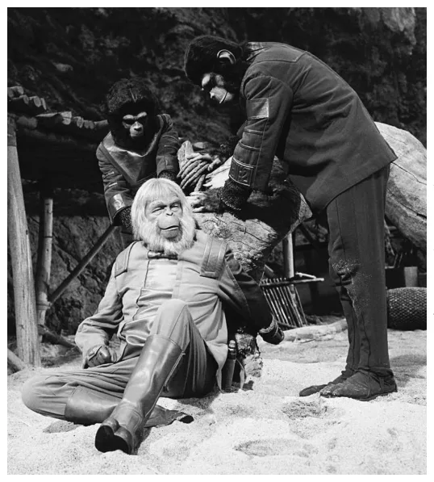

Chương 11 — Chúng ta đối đầu với Họ
Mười Một
Chúng Ta Đối Đầu Với Họ
Khi còn nhỏ, tôi đã xem phiên bản gốc năm 1968 của bộ phim Hành Tinh Khỉ (Planet of the Apes). Với tư cách là một nhà linh trưởng học tương lai, tôi bị mê hoặc, xem đi xem lại nhiều lần và cực kỳ thích những bộ trang phục khỉ sến súa đó.
Nhiều năm sau, tôi phát hiện ra một giai thoại thú vị về quá trình quay bộ phim, được kể lại bởi cả Charlton Heston và Kim Hunter, hai ngôi sao của phim: vào giờ ăn trưa, những diễn viên đóng vai tinh tinh và những người đóng vai khỉ đột lại ngồi ăn thành các nhóm riêng biệt.1
Như người ta vẫn nói (thường được cho là của Robert Benchley): “Trên thế giới có hai loại người: những người chia thế giới thành hai loại người và những người không làm thế.” Nhóm thứ nhất đông hơn hẳn. Và hệ quả là vô cùng to lớn khi con người bị chia thành Chúng Ta và Họ, nhóm trong và nhóm ngoài, “người của mình” (tức là đồng loại của ta) và Những Kẻ Khác.
Chương này khám phá xu hướng hình thành sự phân đôi Chúng Ta/Họ và thiên vị phe mình của chúng ta. Liệu tâm thế này có mang tính phổ quát không? Các phạm trù “Chúng Ta” và “Họ” linh hoạt đến mức nào? Liệu có hy vọng nào rằng tính cục bộ bầy đàn và chứng bài ngoại của con người có thể bị xóa bỏ để những diễn viên đóng vai tinh tinh và khỉ đột ở Hollywood có thể cùng ngồi bẻ bánh ăn chung một bàn không?
SỨC MẠNH CỦA SỰ PHÂN CHIA CHÚNG TA/HỌ

Não bộ của chúng ta hình thành sự phân đôi Chúng Ta/Họ (từ đây gọi tắt là “phân chia Chúng Ta/Họ”) với tốc độ đáng kinh ngạc.2 Như đã thảo luận ở chương 3, chỉ cần tiếp xúc 50 mili giây với khuôn mặt của một người thuộc chủng tộc khác là đủ để kích hoạt hạch hạnh nhân, đồng thời không kích hoạt vùng nhận diện khuôn mặt hình thoi mạnh bằng khuôn mặt cùng chủng tộc—tất cả diễn ra chỉ trong vài trăm mili giây. Tương tự, não bộ phân loại khuôn mặt theo giới tính hoặc địa vị xã hội với tốc độ gần như tương đương.
Những thành kiến tự động, chớp nhoáng chống lại một phe Họ có thể được chứng minh bằng Bài kiểm tra Liên tưởng Tiềm ẩn (IAT) cực kỳ thông minh và tinh quái.3
Giả sử bạn có định kiến vô thức đối với loài quỷ lùn (troll). Để đơn giản hóa bài kiểm tra IAT hết mức: Một màn hình máy tính nhấp nháy hình ảnh của con người hoặc quỷ lùn, hoặc các từ mang nghĩa tích cực (ví dụ: “trung thực”) hay tiêu cực (“dối trá”). Đôi khi quy tắc là “Nếu thấy hình người hoặc từ tích cực, hãy nhấn nút đỏ; nếu là quỷ lùn hoặc từ tiêu cực, nhấn nút xanh.” Và đôi khi là “Người hoặc từ tiêu cực, nhấn đỏ; quỷ lùn hoặc từ tích cực, nhấn xanh.” Do định kiến chống quỷ lùn của bạn, việc ghép quỷ lùn với một từ tích cực, hoặc ghép người với một từ tiêu cực, sẽ gây ra sự lệch pha và hơi mất tập trung. Vì thế bạn khựng lại vài mili giây trước khi nhấn nút.
Điều đó diễn ra hoàn toàn tự động—bạn không hề đang sôi máu nghĩ về những mánh khóe làm ăn cục bộ của quỷ lùn hay sự tàn bạo của chúng trong Trận chiến Nào Đó năm 1523. Bạn chỉ đang xử lý từ ngữ và hình ảnh, và một cách vô thức bạn khựng lại, bị chặn đứng bởi sự nghịch lý khi nối quỷ lùn với “đáng yêu”, hay con người với “hôi hám”. Chạy đủ số lượt, mô thức chậm trễ đó sẽ lộ diện, phơi bày định kiến của bạn.
Những đường đứt gãy trong não bộ phân chia Chúng Ta với Họ đã được thể hiện trong phần thảo luận về oxytocin ở chương 4. Hãy nhớ lại cách hormone này thúc đẩy lòng tin, sự hào phóng và hợp tác đối với Chúng Ta nhưng lại dẫn đến hành vi tệ hại hơn đối với Họ—gây hấn phủ đầu nhiều hơn trong các trò chơi kinh tế, ủng hộ việc hy sinh Họ (nhưng không phải Chúng Ta) vì lợi ích chung nhiều hơn. Oxytocin khuếch đại sự phân chia Chúng Ta/Họ.
Điều này cực kỳ thú vị. Nếu bạn thích bông cải xanh nhưng ghét súp lơ trắng, không có hormone nào khuếch đại cả hai sở thích đó. Cũng tương tự với việc thích cờ vua và khinh cờ thỏ cáo. Tác động trái ngược của oxytocin lên Chúng Ta và Họ chứng tỏ mức độ nổi bật sâu sắc của kiểu phân đôi này.
Mức độ ăn sâu của việc phân chia Chúng Ta/Họ còn được củng cố thêm bởi một điều đáng kinh ngạc—các loài khác cũng làm như vậy. Thoạt đầu điều này có vẻ chẳng có gì sâu sắc. Suy cho cùng, tinh tinh giết con đực từ bầy khác, bầy khỉ đầu chó xù lông khi chạm trán nhau, động vật đủ mọi loài đều căng thẳng trước kẻ lạ.
Điều đó đơn giản chỉ phản ánh việc không mấy thiện cảm với kẻ mới đến, một phe Họ. Nhưng một số loài khác có khái niệm rộng hơn về Chúng Ta và Họ.4 Ví dụ, những bầy tinh tinh tăng nhanh về số lượng có thể tách đàn; mối thù hận giết chóc nhanh chóng nảy sinh giữa những thành viên từng chung bầy. Đáng chú ý hơn, bạn có thể chứng minh sự phân chia Chúng Ta/Họ tự động ở các loài linh trưởng khác bằng phiên bản IAT dành cho khỉ. Trong một nghiên cứu, các con vật được xem hình ảnh của thành viên bầy mình hoặc bầy hàng xóm, xen kẽ với những thứ tích cực (ví dụ: trái cây) hoặc tiêu cực (ví dụ: nhện). Và lũ khỉ nhìn lâu hơn vào những cặp ghép nghịch lý (ví dụ: thành viên bầy mình đi kèm với nhện). Những con khỉ này không chỉ đánh nhau với hàng xóm để tranh giành tài nguyên. Chúng thực sự có những liên tưởng tiêu cực về họ—“Bọn kia giống như lũ nhện gớm ghiếc, còn bọn mình, bọn mình giống như trái cây nhiệt đới thơm ngon.”*
Vô số thí nghiệm xác nhận rằng não bộ xử lý hình ảnh một cách khác biệt chỉ trong vài mili giây dựa trên những tín hiệu tối thiểu về chủng tộc hoặc giới tính.5
Tương tự, hãy xem xét mô hình “nhóm tối thiểu” (minimal group), do Henri Tajfel thuộc Đại học Bristol tiên phong vào những năm 1970. Ông chứng minh rằng ngay cả khi việc phân nhóm dựa trên những khác biệt mong manh (ví dụ: ai đó ước lượng thừa hay thiếu số chấm trong một bức tranh), thiên vị nhóm trong—như mức độ hợp tác cao hơn—vẫn nhanh chóng hình thành. Tính thân xã hội như vậy bắt nguồn từ sự nhận diện nhóm—mọi người ưu tiên phân bổ nguồn lực cho những cá nhân vô danh cùng nhóm với mình.
Chỉ riêng việc gom mọi người thành nhóm đã kích hoạt thiên kiến cục bộ, bất kể cơ sở phân nhóm có mong manh đến đâu. Nhìn chung, mô hình nhóm tối thiểu làm tăng thiện cảm của chúng ta đối với Chúng Ta hơn là làm giảm thiện cảm đối với Họ. Tôi đoán đó cũng là một tin tốt ít ỏi—ít nhất chúng ta cũng tránh được việc nghĩ rằng những người tung đồng xu ra mặt ngửa (trái ngược với mặt sấp đáng ngưỡng mộ của chúng ta) là lũ ăn thịt người chết.
Sức mạnh của những sự phân nhóm tối thiểu, tùy tiện trong việc khơi gợi tâm lý Chúng Ta/Họ gợi nhớ đến “hiệu ứng râu xanh” ở chương 10. Hãy nhớ lại cách hiệu ứng này nằm lơ lửng giữa tính thân xã hội do chọn lọc thân tộc và do vị tha có đi có lại—chúng đòi hỏi một đặc điểm tùy tiện, dễ thấy và có cơ sở di truyền (ví dụ: một bộ râu xanh) báo hiệu xu hướng hành động vị tha đối với những kẻ râu xanh khác—trong những điều kiện đó, những kẻ râu xanh sẽ phát triển thịnh vượng.
Việc phân chia Chúng Ta/Họ dựa trên những đặc điểm chung tối thiểu giống như hiệu ứng râu xanh về mặt tâm lý hơn là di truyền. Chúng ta cảm thấy những liên tưởng tích cực với những người chia sẻ với mình những đặc điểm vô nghĩa nhất.
Một ví dụ tuyệt vời: trong một nghiên cứu, các đối tượng trò chuyện với một nhà nghiên cứu, người mà họ không hề hay biết là có hoặc không bắt chước cử động của họ (chẳng hạn như vắt chéo chân).6 Sự bắt chước không chỉ mang lại cảm giác dễ chịu, kích hoạt hệ dopamine trung não-viền, mà còn khiến các đối tượng sẵn sàng giúp đỡ nhà nghiên cứu hơn, như nhặt giúp cây bút bị rơi. Một cảm giác “Chúng Ta” vô thức nảy sinh chỉ từ việc ai đó ngồi khom lưng trên ghế giống hệt bạn.
Như vậy, một chiến lược vô hình trở nên gắn chặt với một dấu hiệu râu xanh tùy tiện. Điều gì giúp định nghĩa một nền văn hóa cụ thể? Giá trị, niềm tin, quy kết, hệ tư tưởng. Tất cả đều vô hình, cho đến khi chúng được gắn với những dấu hiệu tùy tiện như trang phục, đồ trang sức hay giọng vùng miền. Hãy xem xét hai cách tiếp cận mang nặng giá trị về việc phải làm gì với một con bò: (A) ăn thịt nó; (B) thờ phụng nó. Hai người A hoặc hai người B sẽ ôn hòa hơn nhiều khi bàn về lựa chọn đối xử với con bò so với một người A và một người B ngồi cùng nhau. Điều gì có thể đánh dấu một cách đáng tin cậy người theo cách tiếp cận A? Có thể là chiếc mũ Stetson và đôi bốt cao bồi. Còn người theo cách B? Có lẽ là một bộ sari hoặc áo khoác Nehru. Những dấu hiệu đó ban đầu là tùy tiện—chẳng có gì ở vật thể gọi là sari tự thân gợi ý niềm tin rằng bò là loài linh thiêng vì được thần linh chăn dắt. Và cũng chẳng có mối liên hệ tất yếu nào giữa việc ăn thịt và hình dáng chiếc mũ Stetson—nó che nắng khỏi mắt và gáy bạn, hữu ích dù bạn chăn bò vì mê bít tết hay vì Chúa Krishna từng chăn bò. Các nghiên cứu nhóm tối thiểu cho thấy xu hướng tạo ra sự phân chia Chúng Ta/Họ thiên lệch từ những khác biệt tùy tiện. Điều chúng ta làm tiếp theo là gắn những dấu hiệu tùy tiện đó với những khác biệt sâu sắc về giá trị và niềm tin.
Và rồi có điều gì đó xảy ra với những dấu hiệu tùy tiện ấy. Chúng ta (ví dụ: linh trưởng, chuột, những chú chó của Pavlov) có thể được điều kiện hóa để liên kết một thứ tùy tiện, như tiếng chuông, với một phần thưởng.7 Khi mối liên kết củng cố, liệu tiếng chuông reo vẫn “chỉ” là một dấu hiệu tượng trưng cho khoái cảm sắp tới, hay bản thân nó trở thành khoái cảm? Công trình tinh tế liên quan đến hệ thống dopamine trung não-viền cho thấy ở một tỷ lệ đáng kể chuột thí nghiệm, bản thân tín hiệu tùy tiện đó trở thành phần thưởng. Tương tự, một biểu tượng tùy tiện của giá trị cốt lõi thuộc phe Chúng Ta dần mang lấy sức sống và quyền năng riêng, trở thành cái được biểu đạt thay vì cái biểu đạt. Do đó, chẳng hạn, những mảng màu sắc và hoa văn trên mảnh vải tạo nên lá cờ quốc gia trở thành thứ mà người ta sẵn sàng giết chóc và hy sinh vì nó.*
Sức mạnh của việc phân chia Chúng Ta/Họ còn thể hiện qua sự xuất hiện sớm của nó ở trẻ em. Đến ba hoặc bốn tuổi, trẻ đã phân loại mọi người theo chủng tộc và giới tính, có cái nhìn tiêu cực hơn về những phe Họ như vậy, và nhìn nhận khuôn mặt khác chủng tộc trông giận dữ hơn khuôn mặt cùng chủng tộc.8
Và thậm chí còn sớm hơn thế. Trẻ sơ sinh học nhận diện khuôn mặt cùng chủng tộc tốt hơn khác chủng tộc. (Làm sao biết được? Hãy cho trẻ sơ sinh xem lặp đi lặp lại ảnh của một người; bé sẽ nhìn bức ảnh ít đi sau mỗi lần. Giờ hãy cho xem một khuôn mặt khác—nếu bé không phân biệt được hai khuôn mặt, bé hầu như không thèm liếc nhìn. Nhưng nếu bé nhận ra đó là gương mặt mới, bé sẽ phấn khích và nhìn lâu hơn).9
Bốn suy nghĩ quan trọng về việc trẻ em phân đôi thế giới:
Trẻ em có đang học những định kiến này từ cha mẹ không? Không hẳn vậy. Trẻ lớn lên trong những môi trường mà các kích thích không ngẫu nhiên âm thầm mở đường cho sự phân đôi. Nếu một đứa trẻ sơ sinh chỉ nhìn thấy những khuôn mặt có cùng một màu da, điều nổi bật nhất ở khuôn mặt đầu tiên có màu da khác chính là màu da. Sự phân đôi chủng tộc được hình thành trong một giai đoạn phát triển then chốt. Bằng chứng là những đứa trẻ được nhận nuôi trước tám tuổi bởi cha mẹ thuộc chủng tộc khác sẽ phát triển khả năng nhận diện khuôn mặt chuyên sâu đối với chủng tộc của cha mẹ nuôi.10
Trẻ em học cách phân đôi ngay cả khi không hề có ác ý nào. Khi một cô giáo mẫu giáo nói: “Chào buổi sáng, các bé trai và các bé gái,” bọn trẻ đang được dạy rằng việc chia thế giới theo cách đó có ý nghĩa hơn là nói: “Chào buổi sáng, những bạn đã rụng răng và những bạn chưa rụng răng.” Điều đó có ở khắp mọi nơi, từ việc “cô ấy” và “anh ấy” mang nghĩa khác nhau cho đến những ngôn ngữ say mê phân đôi giới tính đến mức gán cho cả đồ vật vô tri những tuyến sinh dục danh dự.*11
Sự phân chia Chúng Ta/Họ theo chủng tộc có thể trông như ăn sâu không thể gột rửa ở trẻ em bởi vì chính những bậc cha mẹ quyết tâm ngăn chặn nó nhất lại thường làm việc đó rất tệ. Như các nghiên cứu chỉ ra, những người theo chủ nghĩa tự do thường cảm thấy lúng túng khi thảo luận về chủng tộc với con cái. Thay vào đó, họ chống lại sức hút của việc phân chia Chúng Ta/Họ bằng những khái niệm trừu tượng chẳng có ý nghĩa gì với trẻ nhỏ—“Thật tuyệt vời khi mọi người đều có thể làm bạn” hay “Khủng long Barney màu tím, và chúng ta yêu Barney.”
Như vậy, sức mạnh của sự phân chia Chúng Ta/Họ được chứng minh qua: (a) tốc độ và lượng kích thích giác quan tối thiểu cần thiết để não bộ xử lý sự khác biệt nhóm; (b) tính tự động vô thức của những quá trình đó; (c) sự hiện diện của nó ở các loài linh trưởng khác và trẻ rất nhỏ; và (d) xu hướng phân nhóm theo những khác biệt tùy tiện, rồi sau đó thổi hồn quyền lực vào những dấu hiệu đó.
CHÚNG TA
Việc phân chia Chúng Ta/Họ thường bao gồm việc thổi phồng công trạng của Chúng Ta về các giá trị cốt lõi—chúng ta đúng đắn hơn, khôn ngoan hơn, đạo đức hơn và xứng đáng hơn khi nói đến việc biết các vị thần muốn gì/điều hành nền kinh tế/nuôi dạy con cái/chiến đấu trong cuộc chiến này. Tinh thần Chúng Ta cũng bao gồm việc thổi phồng giá trị của những dấu hiệu tùy tiện của phe mình, và điều đó đòi hỏi khá nhiều công sức—hợp lý hóa tại sao đồ ăn của ta ngon hơn, âm nhạc của ta lay động hơn, ngôn ngữ của ta logic hay giàu chất thơ hơn.
Có lẽ còn hơn cả cảm giác thượng đẳng, tình cảm dành cho Chúng Ta xoay quanh những nghĩa vụ chung, sự sẵn lòng và kỳ vọng về tính tương hỗ.12 Bản chất của tâm thế Chúng Ta là sự tụ nhóm không ngẫu nhiên tạo ra tần suất tương tác tích cực cao hơn mức kỳ vọng. Như ta đã thấy ở chương 10, chiến lược hợp lý trong trò chơi Thế tiến thoái lưỡng nan của tù nhân chỉ có một lượt là phản bội. Sự hợp tác chỉ nở rộ khi trò chơi có số lượt không xác định, và khi danh tiếng của ta có thể đi trước ta. Theo định nghĩa, các nhóm luôn có những trò chơi nhiều lượt và phương tiện để lan truyền tin đồn về một kẻ đáng ghét nào đó.
Cảm giác nghĩa vụ và có đi có lại giữa Chúng Ta được thể hiện trong các trò chơi kinh tế, nơi người chơi tin tưởng, hào phóng và hợp tác với thành viên nhóm trong nhiều hơn với thành viên nhóm ngoài (ngay cả trong mô hình nhóm tối thiểu, khi người chơi biết rõ việc phân nhóm là tùy tiện).13 Tinh tinh thậm chí còn thể hiện yếu tố tin tưởng này khi chúng phải chọn giữa (a) chắc chắn nhận được một ít thức ăn tầm thường và (b) nhận được thức ăn tuyệt hảo nếu một con tinh tinh khác chịu chia sẻ với mình. Tinh tinh chọn kịch bản thứ hai—đòi hỏi sự tin tưởng—khi con tinh tinh kia là bạn chải lông của nó.
Hơn nữa, việc mồi tâm lý khiến mọi người nghĩ về nạn nhân của bạo lực như một người thuộc phe Chúng Ta, thay vì phe Họ, làm tăng khả năng họ sẽ can thiệp. Và hãy nhớ lại ở chương 3, cổ động viên tại một trận bóng đá có nhiều khả năng giúp đỡ một khán giả bị thương hơn nếu người đó mặc áo có huy hiệu đội nhà.14
Tính thân xã hội gia tăng đối với thành viên nhóm trong thậm chí không đòi hỏi tương tác mặt đối mặt. Trong một nghiên cứu, các đối tượng từ một khu phố phân cực sắc tộc bắt gặp một bảng câu hỏi mở, đã dán tem nằm trên vỉa hè gần hộp thư. Các đối tượng có nhiều khả năng bỏ nó vào hòm thư hơn nếu bảng câu hỏi thể hiện sự ủng hộ đối với một giá trị thuộc nhóm sắc tộc của chính họ.15
Nghĩa vụ nhóm trong còn thể hiện qua việc mọi người cảm thấy cần phải chuộc lỗi nhiều hơn đối với những sai phạm gây ra cho Chúng Ta so với Họ. Với trường hợp đầu, người ta thường đền bù cho cá nhân bị hại và cư xử thân xã hội hơn với cả nhóm nói chung. Nhưng người ta thường chuộc lỗi với nhóm trong bằng cách cư xử phản xã hội hơn đối với một nhóm khác. Hơn nữa, trong những kịch bản như vậy, một người càng cảm thấy tội lỗi về sai phạm của mình với nhóm trong, cô ta lại càng đối xử tệ hơn với phe Họ.16
Vì thế, đôi khi bạn giúp Chúng Ta bằng cách trực tiếp giúp Chúng Ta, đôi khi bằng cách làm hại Họ. Điều này đặt ra một vấn đề rộng lớn hơn về chủ nghĩa cục bộ nhóm trong: mục tiêu là để nhóm của bạn làm tốt, hay đơn giản là tốt hơn Họ? Nếu là vế đầu, mục tiêu là tối đa hóa mức độ phúc lợi tuyệt đối của nhóm trong, và mức phần thưởng dành cho Họ chẳng liên quan; nếu là vế sau, mục tiêu là tối đa hóa khoảng cách giữa Chúng Ta và Họ.
Cả hai đều xảy ra. Làm tốt hơn thay vì làm tốt có ý nghĩa trong các trò chơi có tổng bằng không, nơi chỉ một đội có thể thắng, và việc thắng với tỷ số 1–0, 10–0 hay 10–9 đều tương đương nhau. Hơn nữa, đối với những người hâm mộ thể thao cuồng nhiệt theo phe phái, có sự kích hoạt dopamine trung não-viền tương tự nhau khi đội nhà thắng hoặc khi đối thủ đáng ghét thua một bên thứ ba.*17 Đây chính là schadenfreude, niềm hả hê trước nỗi đau của kẻ khác, nơi nỗi đau của họ là lợi ích của bạn.
Vấn đề nảy sinh khi các trò chơi có tổng khác không lại bị nhìn nhận như trò chơi có tổng bằng không (kẻ thắng ăn tất).18 Sẽ chẳng phải là một tâm thế hay ho gì khi nghĩ mình đã thắng Thế chiến III nếu sau đó Chúng Ta còn hai túp lều bùn và ba thanh củi trong khi Họ chỉ còn mỗi thứ một cái.* Một phiên bản kinh hoàng của lối tư duy này đã xảy ra vào cuối Thế chiến I, khi phe Đồng minh biết mình có nhiều nguồn lực (tức binh lính) hơn Đức. Do đó, tư lệnh Anh Douglas Haig đã tuyên bố chiến lược “tiêu hao không ngừng”, trong đó Anh liên tục tấn công bất chấp có bao nhiêu lính của mình thiệt mạng—miễn là quân Đức mất ít nhất bằng chừng đó.
Vì vậy, chủ nghĩa cục bộ nhóm trong thường quan tâm đến việc Chúng Ta đánh bại Họ hơn là việc Chúng Ta đơn thuần sống tốt. Đây là bản chất của việc dung thứ bất bình đẳng nhân danh lòng trung thành. Phù hợp với điều đó, việc mồi khái niệm lòng trung thành củng cố sự thiên vị và gắn kết nhóm trong, trong khi mồi khái niệm bình đẳng lại tạo ra tác dụng ngược lại.19
Đan xen với lòng trung thành và sự thiên vị nhóm trong là khả năng đồng cảm được tăng cường. Chẳng hạn, hạch hạnh nhân kích hoạt khi nhìn thấy khuôn mặt sợ hãi, nhưng chỉ với thành viên cùng nhóm; khi đó là thành viên nhóm ngoài, việc Họ tỏ ra sợ hãi thậm chí có thể là tin vui—nếu điều đó làm Họ khiếp sợ, thì cứ tới đi. Hơn nữa, hãy nhớ lại ở chương 3 phản xạ “cảm giác vận động đồng dạng” khiến bạn căng cơ tay khi xem một bàn tay bị kim châm; phản xạ đó mạnh hơn nếu đó là bàn tay cùng chủng tộc.20
Như ta đã thấy, mọi người dễ chuộc lỗi cho sai phạm chống lại Chúng Ta hơn là chống lại Họ. Vậy còn phản ứng khi các thành viên khác trong nhóm vi phạm chuẩn mực thì sao?
Phổ biến nhất là tha thứ cho Chúng Ta dễ dàng hơn Họ. Như chúng ta sẽ thấy, điều này thường được hợp lý hóa—chúng ta lỡ bước vì hoàn cảnh đặc biệt; Họ phạm lỗi vì bản chất Họ là thế.
Một điều thú vị có thể xảy ra khi sai phạm của ai đó đồng nghĩa với việc vạch áo cho người xem lưng, khẳng định một định kiến tiêu cực. Sự xấu hổ của nhóm trong nảy sinh từ đó có thể kích động mức độ trừng phạt rất cao như một tín hiệu gửi tới người ngoài.21
Nước Mỹ, với những sự hợp lý hóa và tâm lý mâu thuẫn về sắc tộc, cung cấp rất nhiều ví dụ như vậy. Hãy xem xét Rudy Giuliani, người lớn lên ở Brooklyn trong một khu phố người Mỹ gốc Ý bị tội phạm có tổ chức chi phối (cha của Giuliani từng ngồi tù vì tội cướp có vũ trang và sau đó làm việc cho anh rể, một tay cho vay nặng lãi của băng Mafia). Giuliani nổi lên trên toàn quốc vào năm 1985 với tư cách công tố viên truy tố “Ngũ Đại Gia tộc” trong Phiên tòa Ủy ban Mafia, thực tế đã xóa sổ chúng. Ông có động lực cực lớn để đập tan định kiến coi “người Mỹ gốc Ý” đồng nghĩa với tội phạm có tổ chức. Khi nhắc đến thành tựu của mình, ông nói: “Và nếu chừng đó vẫn chưa đủ để xóa bỏ định kiến về Mafia, thì có lẽ chẳng thể làm gì để xóa bỏ nó được nữa.” Nếu bạn muốn tìm ai đó truy tố bọn mafia với cường độ không mệt mỏi, hãy tìm một người Mỹ gốc Ý đầy tự hào đang phẫn nộ trước những định kiến do băng đảng gây ra.22
Động lực tương tự cũng được gán rộng rãi cho Chris Darden, luật sư người Mỹ gốc Phi làm đồng công tố viên trong phiên tòa xét xử O. J. Simpson. Tương tự với phiên tòa xét xử Julius và Ethel Rosenberg cùng Morton Sobell, tất cả đều là người Do Thái, bị buộc tội làm gián điệp cho Liên Xô. Cuộc truy tố rất công khai đó được thực hiện bởi hai người Do Thái, Roy Cohn và Irving Saypol, và do một thẩm phán Do Thái, Irving Kaufman, chủ tọa—tất cả đều khao khát bác bỏ định kiến coi người Do Thái là những “kẻ theo chủ nghĩa quốc tế” thiếu trung thành. Sau khi án tử hình được tuyên, Kaufman đã được Ủy ban Do Thái Hoa Kỳ, Liên đoàn Chống Phỉ báng và Hội Cựu chiến binh Do Thái vinh danh.*23 Giuliani, Darden, Cohn, Saypol và Kaufman cho thấy rằng thuộc về một nhóm đồng nghĩa với việc hành vi của người khác có thể khiến bạn mang tiếng xấu.*24
Điều này đặt ra một vấn đề lớn hơn, đó là cảm giác nghĩa vụ và lòng trung thành của chúng ta đối với Chúng Ta nói chung. Ở một thái cực, nó có thể mang tính hợp đồng. Điều này có thể hiểu theo nghĩa đen ở các vận động viên chuyên nghiệp trong các môn thể thao đồng đội. Khi các cầu thủ ký hợp đồng, người ta kỳ vọng họ sẽ chơi hết mình, đặt thành tích của đội lên trên việc phô diễn cá nhân. Nhưng các nghĩa vụ đó có giới hạn—họ không bị kỳ vọng phải hy sinh mạng sống cho đội bóng. Và khi vận động viên bị chuyển nhượng, họ không đóng vai trò gián điệp nội gián, cố tình đá thua trong màu áo mới để làm lợi cho đội cũ. Cốt lõi của mối quan hệ hợp đồng như vậy là tính có thể thay thế của cả chủ lẫn người làm thuê.
Ở thái cực kia, dĩ nhiên, là những tư cách thành viên Chúng Ta không thể thay thế và vượt lên trên mọi sự mặc cả. Người ta không bị chuyển nhượng từ dòng Shia sang dòng Sunni, hay từ người Kurd ở Iraq sang những người chăn tuần lộc Sami ở Phần Lan. Hiếm có người Kurd nào muốn trở thành người Sami, và tổ tiên anh ta có lẽ sẽ lật mình dưới mồ khi anh ta dụi mũi vào con tuần lộc đầu tiên. Những người cải đạo thường phải hứng chịu sự trả thù tàn khốc từ phe họ rời bỏ—hãy nghĩ đến Meriam Ibrahim, bị kết án tử hình ở Sudan năm 2014 vì cải sang Cơ Đốc giáo—và sự nghi ngờ từ phe họ vừa gia nhập. Cùng với cảm giác số phận mình là vĩnh viễn xuất hiện những yếu tố đặc trưng của tinh thần Chúng Ta. Bạn không ký một bản hợp đồng bóng chày dựa trên đức tin với những lời hứa hẹn mơ hồ về tiền lương. Nhưng tinh thần Chúng Ta dựa trên các giá trị thiêng liêng—với tổng thể lớn hơn phép cộng các bộ phận, nơi những nghĩa vụ bất khả thi hành kéo dài qua nhiều thế hệ, nhiều thiên niên kỷ, thậm chí sang cả kiếp sau, nơi đó là Chúng Ta dù đúng hay sai—chính là bản chất của các mối quan hệ dựa trên đức tin.
Đương nhiên, mọi thứ phức tạp hơn thế. Đôi khi một vận động viên chọn chuyển đội lại bị coi là phản bội một niềm tin thiêng liêng. Hãy nhớ lại sự phản bội bị quy kết khi LeBron James chọn rời đội Cavaliers ở quê hương Cleveland, và cách người ta coi quyết định trở về của anh như Ngày Chúa Tái Lâm. Ở thái cực khác của tư cách thành viên nhóm, người ta vẫn cải đạo, di cư, đồng hóa, và đặc biệt ở Hoa Kỳ, trở thành một Chúng Ta khá khác thường—hãy xem cựu Thống đốc Bobby Jindal của bang Louisiana, với giọng miền Nam đặc sệt và đức tin Cơ Đốc giáo, sinh ra với tên Piyush Jindal trong một gia đình nhập cư theo Ấn Độ giáo từ Ấn Độ. Và hãy xem xét sự phức tạp trong—dùng một cụm từ khủng khiếp—tính một chiều của sự hoán đổi: những kẻ Hồi giáo cực đoan sẵn sàng hành quyết Meriam Ibrahim trong khi lại chủ trương ép buộc cải đạo sang Hồi giáo bằng lưỡi gươm.
Bản chất của tư cách thành viên nhóm có thể gây tranh cãi đẫm máu khi liên quan đến mối quan hệ của người dân với nhà nước. Liệu đó có phải là quan hệ hợp đồng? Người dân đóng thuế, tuân thủ pháp luật, đi nghĩa vụ quân sự; chính phủ cung cấp dịch vụ xã hội, xây đường sá và cứu trợ sau bão. Hay đó là mối quan hệ của những giá trị thiêng liêng? Người dân dâng hiến sự phục tùng tuyệt đối và nhà nước cung cấp những huyền thoại về Tổ Quốc. Rất ít công dân như vậy có thể hình dung rằng nếu con cò tình cờ thả họ xuống một nơi khác, họ hẳn đã nồng nhiệt cảm nhận sự đúng đắn bẩm sinh của một thứ chủ nghĩa ngoại lệ khác, đi đều bước theo một bản hành khúc quân sự khác.
NHỮNG KẺ THUỘC PHE HỌ ĐÓ
Cũng giống như cách chúng ta nhìn nhận Chúng Ta theo những khuôn mẫu chuẩn hóa, có những quy luật trong cách chúng ta nhìn nhận Họ. Một quy luật nhất quán là coi Họ là mối đe dọa, giận dữ và không đáng tin cậy. Hãy lấy người ngoài hành tinh trong phim làm một ví dụ thú vị. Trong một phân tích gần một trăm bộ phim liên quan, bắt đầu từ tác phẩm tiên phong năm 1902 Chuyến Du Hành Lên Mặt Trăng (A Trip to the Moon) của Georges Méliès, gần 80% khắc họa người ngoài hành tinh là ác ý, phần còn lại là thiện chí hoặc trung lập.* Trong các trò chơi kinh tế, người ta ngầm đối xử với thành viên thuộc chủng tộc khác như thể họ kém đáng tin cậy hoặc ít có đi có lại hơn. Người da trắng đánh giá khuôn mặt người Mỹ gốc Phi là giận dữ hơn khuôn mặt người da trắng, và những khuôn mặt mơ hồ về chủng tộc mang biểu cảm giận dữ có nhiều khả năng bị phân loại là thuộc chủng tộc khác. Các đối tượng da trắng có xu hướng ủng hộ việc xét xử tội phạm vị thành niên như người lớn nhiều hơn khi được mồi tâm lý để nghĩ về hung thủ da đen (so với da trắng). Và cảm giác vô thức coi Họ là mối đe dọa có thể mang tính trừu tượng đến kinh ngạc—người hâm mộ bóng chày có xu hướng ước lượng thấp khoảng cách tới sân vận động của đội đối thủ, trong khi những người Mỹ thù địch với người nhập cư Mexico lại ước lượng thấp khoảng cách tới Thành phố Mexico.
Nhưng phe Họ không chỉ khơi gợi cảm giác đe dọa; đôi khi đó là sự ghê tởm. Quay lại với vỏ não đảo, bộ phận ở hầu hết các loài động vật phụ trách cảm giác ghê tởm vị giác—như cắn phải thức ăn thối rữa—nhưng danh mục đảm nhiệm của nó ở người bao gồm cả sự ghê tởm về đạo đức và thẩm mỹ. Hình ảnh người nghiện ma túy hoặc người vô gia cư thường kích hoạt thùy đảo, chứ không phải hạch hạnh nhân.25
Việc cảm thấy ghê tởm trước niềm tin trừu tượng của một nhóm khác vốn không phải là vai trò tự nhiên của thùy đảo, thứ tiến hóa để quan tâm đến mùi vị kinh tởm. Các dấu hiệu Chúng Ta/Họ tạo ra một bước đệm. Cảm thấy ghê tởm Họ vì họ ăn những thứ kinh dị, linh thiêng hay đáng yêu, xức lên mình những mùi hương ôi thiu, ăn mặc theo lối chướng mắt—đây là những thứ mà thùy đảo có thể bấu víu vào. Theo lời nhà tâm lý học Paul Rozin thuộc Đại học Pennsylvania: “Sự ghê tởm đóng vai trò như một dấu hiệu sắc tộc hoặc nhóm ngoài.” Việc xác lập rằng Họ ăn những thứ ghê tởm tạo đà cho việc kết luận rằng Họ cũng có những ý tưởng ghê tởm về, chẳng hạn, đạo đức học nghĩa vụ.26
Vai trò của sự ghê tởm trong việc phân biệt phe Họ giải thích một số khác biệt cá nhân về mức độ của nó. Cụ thể, những người có thái độ tiêu cực mạnh mẽ nhất đối với người nhập cư, người nước ngoài và các nhóm lệch chuẩn xã hội thường có ngưỡng ghê tởm liên nhân cách rất thấp (ví dụ: ngại mặc quần áo của người lạ hoặc ngồi vào chiếc ghế còn ấm hơi người vừa đứng dậy).27 Chúng ta sẽ quay lại phát hiện này ở chương 15.
Một số phe Họ thì lố bịch, tức là đối tượng của sự chế giễu và nhạo báng, dùng hài hước như một vũ khí thù địch.28 Việc nhóm ngoài chế giễu nhóm trong là vũ khí của kẻ yếu, làm tổn thương kẻ mạnh và giảm bớt nỗi cay đắng của sự phục tùng. Khi nhóm trong chế giễu nhóm ngoài, mục đích là để củng cố các định kiến tiêu cực và hiện thực hóa hệ thống thứ bậc. Phù hợp với điều này, những cá nhân có “định hướng thống trị xã hội” cao (chấp nhận thứ bậc và bất bình đẳng nhóm) có nhiều khả năng thích thú với những câu chuyện cười về nhóm ngoài nhất.
Phe Họ cũng thường được nhìn nhận là đơn giản và đồng nhất hơn Chúng Ta, với cảm xúc đơn giản hơn và ít nhạy cảm với nỗi đau hơn. David Berreby, trong cuốn sách xuất sắc Chúng Ta và Họ: Khoa Học Về Bản Sắc (Us and Them: The Science of Identity), đưa ra một ví dụ nổi bật: dù là ở La Mã cổ đại, Anh thời trung cổ, Trung Hoa đế chế hay miền Nam nước Mỹ trước Nội chiến, giới tinh hoa đều giữ định kiến biện minh cho hệ thống rằng nô lệ là những kẻ đơn giản, ngây thơ như trẻ con và không có khả năng tự lập.29
Tư duy bản chất hóa (essentialism) là việc nhìn nhận phe Họ như một khối đồng nhất và có thể thay thế cho nhau, với ý niệm rằng trong khi chúng ta là những cá nhân riêng biệt, họ lại mang một bản chất nguyên khối, bất biến và đáng ghét. Một lịch sử dài quan hệ tồi tệ với phe Họ tiếp thêm nhiên liệu cho tư duy bản chất hóa—“Từ xưa họ vẫn thế và mãi mãi sẽ thế.” Việc ít có tương tác cá nhân với phe Họ cũng vậy—suy cho cùng, càng tương tác nhiều với phe Họ, càng tích lũy được nhiều ngoại lệ thách thức lối rập khuôn bản chất hóa. Nhưng sự thưa thớt trong tương tác không phải điều kiện bắt buộc, bằng chứng là tư duy bản chất hóa về người khác giới.30
Như vậy, phe Họ hiện lên với nhiều sắc thái khác nhau—đe dọa và giận dữ, ghê tởm và đáng khinh, nguyên thủy và không phân hóa.
Suy Nghĩ So Với Cảm Xúc Về Họ
Suy nghĩ của chúng ta về Họ mang tính hợp lý hóa hậu nghiệm cho cảm xúc của chúng ta về Họ đến mức nào? Quay lại với sự tương tác giữa nhận thức và cảm xúc.
Việc phân chia Chúng Ta/Họ rất dễ được đóng khung về mặt nhận thức. John Jost thuộc Đại học New York đã khám phá một khía cạnh của điều này, đó là những màn nhào lộn nhận thức của những kẻ ở trên đỉnh nhằm biện minh cho hiện trạng bất bình đẳng của hệ thống hiện hành. Sự nhào lộn nhận thức cũng xảy ra khi cái nhìn tiêu cực, đồng nhất của chúng ta về một kiểu người thuộc phe Họ buộc phải dung nạp một ngôi sao nổi tiếng hấp dẫn thuộc phe Họ, một người hàng xóm phe Họ, hay một người phe Họ đã cứu mạng ta—“À, người phe Họ này khác” (chắc chắn theo sau đó là cảm giác tự mãn về sự cởi mở của bản thân).31
Sự tinh tế về nhận thức có thể cần thiết khi coi phe Họ là mối đe dọa.32 Việc sợ rằng kẻ phe Họ đang tiến lại gần sẽ cướp của bạn chứa đầy cảm xúc và tính cụ thể. Nhưng việc lo sợ rằng những kẻ phe Họ đó sẽ cướp việc làm của chúng ta, thao túng ngân hàng, làm loãng dòng máu của chúng ta, khiến con cái chúng ta trở thành người đồng tính, v.v., đòi hỏi nhận thức hướng về tương lai liên quan đến kinh tế học, xã hội học, khoa học chính trị và ngụy khoa học.
Do đó, việc phân chia Chúng Ta/Họ có thể nảy sinh từ năng lực nhận thức để khái quát hóa, tưởng tượng tương lai, suy diễn động cơ ẩn giấu và sử dụng ngôn ngữ để đồng bộ hóa những nhận thức đó với những người cùng phe Chúng Ta. Như ta đã thấy, các loài linh trưởng khác không chỉ giết cá thể khác vì chúng là phe Họ mà còn có những liên tưởng tiêu cực về chúng. Tuy nhiên, không có loài linh trưởng nào khác giết chóc vì hệ tư tưởng, thần học hay thẩm mỹ.
Bất chấp tầm quan trọng của suy nghĩ trong việc phân chia Chúng Ta/Họ, cốt lõi của nó vẫn là cảm xúc và tính tự động.33 Theo lời của Berreby trong cuốn sách của ông: “Việc rập khuôn không phải là trường hợp của nhận thức lười biếng, đi đường tắt. Nó hoàn toàn không phải là nhận thức có ý thức.” Tính tự động như vậy tạo ra những câu nói như “Tôi không thể chỉ rõ tại sao, nhưng cứ thấy sai sai khi Họ làm thế.” Công trình của Jonathan Haidt tại Đại học New York cho thấy trong những hoàn cảnh như vậy, nhận thức chỉ là những lời biện minh hậu nghiệm cho cảm xúc và trực giác, để tự thuyết phục bản thân rằng bạn thực sự đã chỉ ra được lý do một cách hợp lý.
Tính tự động của việc phân chia Chúng Ta/Họ được thể hiện qua tốc độ của hạch hạnh nhân và thùy đảo trong việc tạo ra những phân đôi như vậy—não bộ cân đo đong đếm về mặt cảm xúc trước khi ý thức kịp nhận ra, hoặc thậm chí không bao giờ có nhận thức có ý thức, như với các kích thích dưới ngưỡng. Một thước đo khác cho cốt lõi cảm xúc của việc phân biệt phe Họ là khi chẳng ai biết nguồn gốc của một định kiến là gì. Hãy xem xét người Cagots, một nhóm thiểu số ở Pháp bị bức hại bắt đầu từ thế kỷ XI và kéo dài sang tận thế kỷ trước.34 Người Cagots bị buộc phải sống bên ngoài làng mạc, ăn mặc khác biệt, ngồi riêng trong nhà thờ và làm những công việc thấp kém. Thế nhưng họ không hề khác biệt về ngoại hình, tôn giáo, giọng nói hay tên gọi, và chẳng ai biết tại sao họ lại bị coi là hạng tiện dân. Họ có thể là hậu duệ của binh lính Moor trong cuộc xâm lược Tây Ban Nha của người Hồi giáo và do đó bị người Cơ Đốc giáo phân biệt đối xử. Hoặc họ có thể là những tín đồ Cơ Đốc giáo sơ khai, và sự phân biệt đối xử với họ do những người ngoại đạo khởi xướng. Chẳng ai biết tội lỗi của tổ tiên người Cagots là gì hay làm sao nhận ra một người Cagots ngoài lời truyền miệng trong cộng đồng. Trong Cách mạng Pháp, người Cagots đã đốt giấy khai sinh tại các cơ quan chính phủ để tiêu hủy bằng chứng về thân phận của họ.
Tính tự động còn được thấy theo một cách khác. Hãy xem xét một cá nhân mang lòng căm ghét nồng nhiệt đối với hàng loạt nhóm ngoài.35 Có hai cách để giải thích điều này. Lựa chọn 1: Anh ta đã kết luận cẩn thận rằng chính sách thương mại của nhóm A gây hại cho nền kinh tế, và trùng hợp thay lại cũng tin rằng tổ tiên của nhóm B từng báng bổ thần linh, và nghĩ rằng thành viên nhóm C không tỏ đủ sự ăn năn cho một cuộc chiến do ông bà họ khơi mào, và nhận thấy thành viên nhóm D quá xấc xược, và nghĩ rằng nhóm E làm suy đồi các giá trị gia đình. Quá nhiều sự “trùng hợp thay” về mặt nhận thức. Lựa chọn 2: Tính khí độc đoán của anh chàng này bị bất an trước sự mới mẻ và mơ hồ về thứ bậc; đây không phải là một tập hợp các nhận thức mạch lạc. Như ta đã thấy ở chương 7, Theodor Adorno, khi cố gắng tìm hiểu gốc rễ của chủ nghĩa phát xít, đã hệ thống hóa tính khí độc đoán này. Những cá nhân có định kiến với một loại nhóm ngoài có xu hướng mang định kiến với các nhóm ngoài khác, và vì những lý do thuộc về cảm xúc.*36 Sẽ nói thêm về điều này ở chương sau.
Bằng chứng mạnh mẽ nhất cho thấy sự phân biệt phe Họ gay gắt bắt nguồn từ cảm xúc và các quá trình tự động là những nhận thức tưởng chừng hợp lý về phe Họ có thể bị thao túng một cách vô thức. Trong một ví dụ đã trích dẫn trước đó, các đối tượng được mồi vô thức về “lòng trung thành” ngồi gần phe Chúng Ta hơn và xa phe Họ hơn, trong khi những người được mồi về “sự bình đẳng” lại làm ngược lại.* Trong một nghiên cứu khác, các đối tượng xem một loạt ảnh chiếu thông tin cơ bản, tẻ nhạt về một quốc gia mà họ chẳng biết gì (“Có một nước tên là ‘Moldova’ à?”). Với một nửa số đối tượng, những khuôn mặt mang biểu cảm tích cực được nháy lên ở tốc độ dưới ngưỡng giữa các trang chiếu; với nửa còn lại là những biểu cảm tiêu cực. Nhóm đầu hình thành cái nhìn tích cực hơn về quốc gia đó so với nhóm sau.37
Những phán xét có ý thức về phe Họ bị thao túng một cách vô thức ngay trong thế giới thực. Trong một thí nghiệm quan trọng được thảo luận ở chương 3, những người đi làm buổi sáng tại các ga tàu ở các vùng ngoại ô chủ yếu là người da trắng đã điền vào bảng câu hỏi về quan điểm chính trị. Sau đó, tại một nửa số ga tàu, một cặp thanh niên Mexico ăn mặc chỉnh tề xuất hiện mỗi sáng trong hai tuần, trò chuyện khẽ khàng bằng tiếng Tây Ban Nha trước khi lên tàu. Sau đó, hành khách điền vào bảng câu hỏi lần thứ hai.
Đáng kinh ngạc là sự hiện diện của những cặp đôi như vậy khiến người dân ủng hộ việc giảm nhập cư hợp pháp từ Mexico hơn, ủng hộ việc lấy tiếng Anh làm ngôn ngữ chính thức hơn, và phản đối ân xá cho người nhập cư bất hợp pháp nhiều hơn. Sự thao túng này mang tính chọn lọc, không làm thay đổi thái độ đối với người Mỹ gốc Á, người Mỹ gốc Phi hay người Trung Đông.
Còn đây là một tác động hấp dẫn lên sự phân chia Chúng Ta/Họ, nằm sâu bên dưới ngưỡng nhận thức: Chương 4 đã lưu ý rằng khi phụ nữ đang rụng trứng, vùng nhận diện khuôn mặt hình thoi của họ phản ứng mạnh hơn với các khuôn mặt, trong đó vùng vmPFC (“cảm xúc”) phản ứng đặc biệt mạnh hơn với khuôn mặt nam giới. Carlos Navarrete tại Đại học Bang Michigan đã chứng minh rằng phụ nữ da trắng, khi đang rụng trứng, có thái độ tiêu cực hơn đối với đàn ông Mỹ gốc Phi.*38 Như vậy, cường độ của sự phân chia Chúng Ta/Họ đang được điều chỉnh bởi hormone. Cảm xúc của chúng ta về phe Họ có thể bị định hình bởi những thế lực ngầm mà ta chẳng hề hay biết.
Những đặc điểm tự động của việc phân chia Chúng Ta/Họ có thể mở rộng sang sự lây nhiễm ma thuật (magical contagion), một niềm tin rằng bản chất của con người có thể truyền sang đồ vật hoặc các sinh vật khác.39 Điều này có thể mang nghĩa tích cực hoặc tiêu cực—một nghiên cứu cho thấy việc giặt một chiếc áo len từng được JFK mặc sẽ làm giảm giá trị đấu giá của nó, trong khi việc khử trùng một chiếc áo từng được Bernie Madoff mặc lại làm tăng giá trị của nó. Đây là sự phi lý thuần túy—đâu phải chiếc áo len chưa giặt của JFK vẫn còn lưu giữ tinh chất nách thần kỳ của ông, trong khi chiếc áo chưa giặt của Madoff lúc nhúc vi trùng ô uế đạo đức. Và sự lây nhiễm ma thuật đã xảy ra ở những nơi khác—Đức Quốc xã đã giết những con “chó Do Thái” bị cho là nhiễm bẩn cùng với chủ của chúng.*40
Trọng tâm của việc nhận thức chạy theo cảm xúc dĩ nhiên là sự hợp lý hóa. Một ví dụ tuyệt vời xảy ra vào năm 2000, khi mọi người học được cụm từ “mảnh giấy đục lỗ treo lủng lẳng” (hanging chads) sau cuộc bầu cử của Al Gore và việc Tòa án Tối cao chọn George W. Bush.* Dành cho những ai bỏ lỡ trò vui đó, “chad” là mẩu giấy bị đục ra khỏi lá phiếu thẻ đục lỗ khi ai đó bỏ phiếu, và “hanging chad” là mẩu giấy không đứt lìa hoàn toàn; liệu điều này có biện minh cho việc hủy bỏ lá phiếu, dù rõ ràng người đó đã bầu cho ai không? Và hiển nhiên, nếu chỉ một mili giây trước khi những mẩu giấy treo lủng lẳng đó xuất hiện, bạn hỏi các bình luận viên xem lập trường về hanging chad của đảng Reagan và kinh tế học nhỏ giọt, cũng như của đảng FDR và Xã hội Vĩ đại sẽ là gì, hẳn họ sẽ mù tịt. Ấy thế mà ngay lập tức, chỉ một mili giây sau sự cố mẩu giấy, mỗi đảng đều say sưa giải thích tại sao quan điểm của phe Họ đối lập lại đe dọa đến Mẹ, bánh táo và di sản của pháo đài Alamo.
Những “thiên kiến xác nhận” được dùng để hợp lý hóa và biện minh cho sự phân biệt phe Họ tự động là vô số kể—ghi nhớ bằng chứng ủng hộ tốt hơn bằng chứng phản bác; kiểm chứng mọi thứ theo cách chỉ có thể ủng hộ chứ không thể phủ định giả thuyết của bạn; hoài nghi soi xét những kết quả bạn không thích kỹ lưỡng hơn những kết quả bạn thích.
Hơn nữa, việc thao túng sự phân biệt phe Họ tiềm ẩn làm thay đổi các quá trình biện minh. Trong một nghiên cứu, sinh viên Scotland đọc về một trò chơi trong đó người tham gia người Scotland có hoặc không đối xử bất công với người tham gia người Anh. Những sinh viên đọc thấy người Scotland có thành kiến trở nên tích cực hơn trong khuôn mẫu về người Scotland và tiêu cực hơn về người Anh—biện minh cho sự thiên vị của những người tham gia Scotland.41
Nhận thức của chúng ta chạy hụt hơi để bắt kịp bản ngã cảm xúc, sục sạo từng chi tiết nhỏ nhặt hay câu chuyện bịa đặt nghe có vẻ hợp lý để giải thích tại sao chúng ta ghét Họ.42
Tương Tác Liên Nhóm Của Cá Nhân So Với Của Tập Thể
Như vậy, chúng ta có xu hướng nghĩ về Chúng Ta là cao quý, trung thành và bao gồm những cá nhân riêng biệt mà sai sót chỉ do hoàn cảnh. Ngược lại, phe Họ có vẻ ghê tởm, lố bịch, đơn giản, đồng nhất, không phân hóa và có thể thay thế cho nhau. Tất cả thường được hậu thuẫn bởi những lời hợp lý hóa cho trực giác của mình.
Đó là bức tranh một cá nhân điều hướng tâm lý Chúng Ta/Họ trong tâm trí anh ta. Các tương tác giữa các tập thể có xu hướng cạnh tranh và hung hăng hơn so với tương tác giữa các cá nhân thuộc phe Chúng Ta và phe Họ. Theo lời của Reinhold Niebuhr, viết trong Thế chiến II: “Tập thể ngạo mạn hơn, đạo đức giả hơn, vị kỷ hơn và tàn nhẫn hơn trong việc theo đuổi mục đích của mình so với cá nhân.”43
Thường có một mối quan hệ nghịch đảo giữa mức độ gây hấn nội nhóm và liên nhóm. Nói cách khác, những nhóm có tương tác thù địch cao độ với láng giềng thường có xung đột nội bộ tối thiểu. Hoặc, nói theo một cách khác, những nhóm có xung đột nội bộ cao độ quá phân tâm nên không thể tập trung sự thù địch vào Những Kẻ Khác.44
Điều cốt yếu là, liệu mối quan hệ nghịch đảo đó có mang tính nhân quả không? Một xã hội có phải hòa bình bên trong để huy động sự hợp tác quy mô lớn cần thiết cho các cuộc giao tranh liên nhóm lớn không? Một xã hội có phải trấn áp nạn giết người để thực hiện nạn diệt chủng không? Hay đảo ngược lại quan hệ nhân quả, liệu mối đe dọa từ phe Họ có khiến các xã hội hợp tác nội bộ hơn không? Đây là quan điểm được nhà kinh tế học Samuel Bowles thuộc Viện Santa Fe đề xuất, người đã đóng khung điều này là “Xung đột: Bà đỡ của Lòng vị tha.”45
Hãy chờ xem.
NHỮNG LĨNH VỰC ĐỘC NHẤT TRONG VIỆC PHÂN CHIA CHÚNG TA/HỌ CỦA CON NGƯỜI
Mặc dù các loài linh trưởng khác thể hiện những dạng trừu tượng sơ khai của việc phân chia Chúng Ta/Họ, con người đứng ở một tầng bình lưu hoàn toàn độc nhất. Trong phần này tôi xem xét cách mà:
tất cả chúng ta đều thuộc về nhiều phạm trù Chúng Ta khác nhau, và tầm quan trọng tương đối của chúng có thể thay đổi nhanh chóng; không phải mọi phe Họ đều giống nhau, và chúng ta có những hệ thống phân loại phức tạp về các kiểu phe Họ khác nhau cùng những phản ứng mà chúng khơi gợi; chúng ta có thể cảm thấy áy náy về việc phân chia Chúng Ta/Họ và cố gắng che giấu nó; các cơ chế văn hóa có thể làm sắc nhọn hoặc làm dịu đi những đường biên của sự phân đôi này.
Nhiều Phe Chúng Ta
Tôi là một động vật có xương sống, động vật có vú, linh trưởng, khỉ hình người, con người, nam giới, nhà khoa học, người thuận tay trái, người hay hắt hơi khi ra nắng, kẻ nghiện phim Breaking Bad và người hâm mộ đội bóng bầu dục Green Bay Packers.* Tất cả đều là cơ sở để chế tác ra một sự phân chia Chúng Ta/Họ. Điều cốt yếu là phe Chúng Ta nào quan trọng nhất đối với tôi liên tục dịch chuyển—nếu một con bạch tuộc chuyển đến sống cạnh nhà, tôi sẽ cảm thấy một sự thượng đẳng thù địch vì tôi có xương sống còn nó thì không, nhưng mối ác cảm đó có thể tan chảy thành cảm giác đồng tộc khi tôi phát hiện ra rằng con bạch tuộc, giống như tôi, hồi nhỏ rất thích chơi trò Twister.
— Tất cả chúng ta đều thuộc về nhiều sự phân đôi Chúng Ta/Họ. Đôi khi một sự phân đôi có thể làm đại diện cho một sự phân đôi khác—ví dụ, sự phân đôi giữa những người am hiểu/không am hiểu về trứng cá muối là một sự thay thế khá chuẩn cho sự phân đôi về địa vị kinh tế xã hội.
Như đã lưu ý, điều quan trọng nhất về việc chúng ta thuộc về nhiều nhóm Chúng Ta/Họ là sự dễ dàng trong việc dịch chuyển thứ tự ưu tiên của chúng. Một ví dụ nổi tiếng, được thảo luận ở chương 3, liên quan đến thành tích toán học của phụ nữ Mỹ gốc Á, xây dựng xoay quanh định kiến người châu Á giỏi toán, còn phụ nữ thì không. Một nửa số đối tượng được mồi để nghĩ về bản thân là người châu Á trước bài kiểm tra toán; điểm số của họ cải thiện. Một nửa được mồi về giới tính; điểm số sụt giảm. Hơn nữa, mức độ hoạt động ở các vùng vỏ não liên quan đến kỹ năng toán học cũng thay đổi song song theo đó.*46
Chúng ta cũng nhận ra rằng những cá nhân khác thuộc về nhiều phạm trù, và dịch chuyển xem phạm trù nào ta coi là phù hợp nhất. Không có gì ngạc nhiên khi phần lớn tài liệu đó liên quan đến chủng tộc, với câu hỏi cốt lõi là liệu nó có phải là một sự phân chia Chúng Ta/Họ lấn át tất cả những sự phân chia khác hay không.
Tính tối thượng của chủng tộc có rất nhiều sức hấp dẫn theo trực giác dân gian. Thứ nhất, chủng tộc là một thuộc tính sinh học, một bản sắc cố định dễ thấy dễ dàng kích hoạt tư duy bản chất hóa.47 Điều này cũng nuôi dưỡng các trực giác về tiến hóa—con người tiến hóa trong những điều kiện mà màu da khác biệt là tín hiệu rõ ràng nhất cho thấy ai đó là một phe Họ xa lạ. Và tính nổi bật của chủng tộc được thấy xuyên văn hóa—một tỷ lệ đáng kinh ngạc các nền văn hóa trong lịch sử đã phân biệt địa vị theo màu da, bao gồm cả trong các nền văn hóa truyền thống trước khi tiếp xúc với phương Tây, nơi mà với rất ít ngoại lệ (ví dụ: nhóm thiểu số Ainu có địa vị thấp ở Nhật Bản), màu da sáng hơn mang lại địa vị cao hơn cả trong nội bộ lẫn giữa các nhóm.
Nhưng những trực giác này rất mong manh. Thứ nhất, dù có những đóng góp sinh học rõ ràng cho sự khác biệt chủng tộc, “chủng tộc” là một dải liên tục sinh học chứ không phải một phạm trù rời rạc—ví dụ, trừ khi bạn chọn lọc dữ liệu có chủ đích, biến dị di truyền trong cùng một chủng tộc nhìn chung cũng lớn ngang với giữa các chủng tộc. Và điều này thực sự chẳng có gì ngạc nhiên khi nhìn vào phạm vi biến dị dưới một danh mục chủng tộc—hãy so sánh người Sicily với người Thụy Điển hoặc một nông dân Senegal với một người chăn gia súc Ethiopia.*
Lập luận tiến hóa cũng không đứng vững. Những khác biệt về chủng tộc, vốn mới chỉ xuất hiện tương đối gần đây, có rất ít ý nghĩa về mặt Chúng Ta/Họ. Đối với những người săn bắt hái lượm trong lịch sử loài người sơ khai, người khác biệt nhất mà bạn từng gặp trong đời đến từ nơi cách đó chừng vài chục dặm, trong khi người gần nhất thuộc chủng tộc khác sống cách hàng nghìn dặm—không hề có di sản tiến hóa nào về việc con người chạm trán những người có màu da khác biệt rõ rệt.
Hơn nữa, quan niệm về chủng tộc như một hệ thống phân loại cố định, dựa trên sinh học cũng không hoạt động. Vào những thời điểm khác nhau trong lịch sử điều tra dân số Hoa Kỳ, “người Mexico” và “người Armenia” từng được phân loại là các chủng tộc riêng biệt; người miền Nam nước Ý thuộc một chủng tộc khác với người Bắc Âu; một người có một cụ cố da đen và bảy cụ cố da trắng được phân loại là da trắng ở Oregon nhưng không phải ở Florida. Đây là chủng tộc như một cấu trúc văn hóa chứ không phải sinh học.48
Với những sự thật như thế, không có gì đáng ngạc nhiên khi sự phân đôi Chúng Ta/Họ theo chủng tộc thường xuyên bị lấn át bởi các phân loại khác. Phổ biến nhất là giới tính. Hãy nhớ lại phát hiện rằng việc “dập tắt” một liên tưởng sợ hãi có điều kiện với khuôn mặt khác chủng tộc khó hơn so với khuôn mặt cùng chủng tộc. Navarrete đã chứng minh rằng điều này chỉ xảy ra khi các khuôn mặt được điều kiện hóa là nam giới; trong trường hợp này, giới tính lấn át chủng tộc với tư cách là một sự phân loại tự động.* Tuổi tác với tư cách một sự phân loại cũng dễ dàng lấn át chủng tộc. Ngay cả nghề nghiệp cũng có thể—ví dụ, trong một nghiên cứu, các đối tượng da trắng thể hiện sự ưu tiên tự động đối với chính trị gia da trắng hơn vận động viên da đen khi được mồi để nghĩ về chủng tộc, nhưng lại ngược lại khi được mồi để nghĩ về nghề nghiệp.49
Chủng tộc với tư cách là một phạm trù Chúng Ta/Họ nổi bật có thể bị gạt sang một bên nhờ sự tái phân loại tinh tế. Trong một nghiên cứu, các đối tượng xem ảnh của các cá nhân, người da đen hoặc da trắng, mỗi người gắn với một phát ngôn, rồi sau đó phải nhớ xem khuôn mặt nào đi với phát ngôn nào.50 Đã có sự phân loại chủng tộc tự động—nếu đối tượng gán nhầm một câu nói, khuôn mặt được chọn và khuôn mặt thực sự gắn với phát ngôn đó nhiều khả năng thuộc cùng một chủng tộc. Tiếp theo, một nửa số người da đen và một nửa số người da trắng trong ảnh mặc cùng một chiếc áo vàng nổi bật; nửa còn lại mặc áo xám. Lúc này, các đối tượng lại thường nhầm lẫn các khuôn mặt theo màu áo.
Nghiên cứu tuyệt vời của Mary Wheeler và Susan Fiske thuộc Đại học Princeton đã cho thấy cách sự phân loại bị dịch chuyển, khi nghiên cứu hiện tượng kích hoạt hạch hạnh nhân bởi ảnh khuôn mặt khác chủng tộc.51 Ở một nhóm, các đối tượng cố gắng tìm một dấu chấm đặc biệt trong mỗi bức ảnh. Khuôn mặt khác chủng tộc đã không kích hoạt hạch hạnh nhân; bản chất khuôn mặt không được xử lý. Ở nhóm thứ hai, các đối tượng đánh giá xem mỗi khuôn mặt trông có già hơn một độ tuổi nào đó không. Phản ứng của hạch hạnh nhân đối với khuôn mặt khác chủng tộc lớn hơn—việc suy nghĩ theo phạm trù về tuổi tác đã củng cố việc suy nghĩ theo phạm trù về chủng tộc. Ở nhóm thứ ba, một loại rau củ được hiển thị trước mỗi khuôn mặt; các đối tượng đoán xem người đó có thích loại rau củ đó không. Hạch hạnh nhân đã không phản ứng với các khuôn mặt khác chủng tộc.
Ít nhất hai cách diễn giải nảy ra để giải thích kết quả cuối cùng này:
a. Sự phân tâm. Các đối tượng quá bận nghĩ về, chẳng hạn, củ cà rốt nên không thực hiện việc phân loại tự động theo chủng tộc. Điều này giống với hiệu ứng của việc tìm kiếm dấu chấm. b. Tái phân loại. Bạn nhìn vào khuôn mặt một người phe Họ, nghĩ xem họ thích món ăn gì. Bạn hình dung người đó đang đi mua sắm, gọi món trong nhà hàng, ngồi vào bàn ăn tối ở nhà và thưởng thức một món ăn cụ thể. . . . Nói cách khác, bạn nghĩ về người đó như một cá thể. Đây là cách diễn giải được chấp nhận rộng rãi.
Nhưng sự tái phân loại có thể xảy ra trong thế giới thực dưới những hoàn cảnh tàn bạo và khó tin nhất. Dưới đây là những ví dụ mà tôi thấy vô cùng xúc động:
Trong Trận Gettysburg, tướng Liên minh miền Nam Lewis Armistead bị thương chí mạng khi đang dẫn đầu một đợt xung phong. Khi nằm trên chiến trường, ông ra một dấu hiệu bí mật của Hội Tam Điểm, với hy vọng được một đồng môn Tam Điểm nhận ra. Và ông đã được một sĩ quan Liên bang miền Bắc, Hiram Bingham, nhận ra; người này đã bảo vệ ông, đưa ông đến bệnh viện dã chiến của quân Liên bang và trông giữ tư trang cho ông. Trong tích tắc, sự phân chia Chúng Ta/Họ giữa Liên bang/Liên minh đã trở nên kém quan trọng hơn sự phân chia giữa Tam Điểm/phi Tam Điểm.*52
Một sự dịch chuyển phe Họ khác cũng xảy ra trong Nội chiến Hoa Kỳ. Cả hai đội quân đều đầy rẫy binh lính nhập cư người Ireland; người Ireland thường chọn phe một cách ngẫu nhiên, tham gia thứ mà họ tưởng là một cuộc xung đột ngắn ngày để tích lũy chút huấn luyện quân sự—hữu ích cho việc trở về quê hương chiến đấu giành độc lập cho Ireland. Trước trận đánh, binh lính Ireland cài những nhánh lá xanh nhận diện lên mũ, để nếu có nằm xuống giữa lúc chết hoặc hấp hối, họ sẽ trút bỏ sự phân chia Chúng Ta/Họ tùy tiện của cuộc chiến tranh Mỹ này và quay về với phe Chúng Ta thực sự có ý nghĩa—để được nhận ra và giúp đỡ bởi những người đồng hương Ireland của mình.53 Một nhánh lá xanh đóng vai trò như một bộ râu xanh.
Sự dịch chuyển chớp nhoáng của sự phân đôi Chúng Ta/Họ còn được thấy trong Thế chiến II, khi biệt kích Anh bắt cóc tướng Đức Heinrich Kreipe ở đảo Crete, tiếp theo là cuộc hành quân đầy nguy hiểm kéo dài mười tám ngày ra bờ biển để hội quân với một tàu Anh. Một ngày nọ, cả nhóm nhìn thấy tuyết trên đỉnh núi cao nhất đảo Crete. Kreipe lẩm bẩm một mình câu đầu tiên (bằng tiếng Latin) của một bài thơ tụng của Horace về một ngọn núi phủ tuyết. Ngay lúc đó, chỉ huy người Anh, Patrick Leigh Fermor, đọc tiếp phần còn lại. Hai người đàn ông nhận ra rằng họ đã, theo lời của Leigh Fermor, “cùng uống nước từ một dòng suối.” Một sự tái phân loại. Leigh Fermor cho chăm sóc vết thương của Kreipe và đích thân đảm bảo an toàn cho ông suốt quãng đường hành quân còn lại. Hai người vẫn giữ liên lạc sau chiến tranh và tái ngộ nhiều thập kỷ sau trên truyền hình Hy Lạp. “Không có gì phải giận dữ,” Kreipe nói, ca ngợi “chiến dịch táo bạo” của Leigh Fermor.54
Và cuối cùng là cuộc hưu chiến Giáng sinh trong Thế chiến I, một sự kiện tôi sẽ xem xét kỹ lưỡng ở chương cuối cùng. Đây là sự kiện nổi tiếng khi binh lính cả hai phía dành cả ngày để ca hát, cầu nguyện và tiệc tùng cùng nhau, chơi bóng đá và trao đổi quà tặng, và binh lính dọc các chiến hào đã đấu tranh để kéo dài cuộc hưu chiến. Chỉ mất đúng một ngày để sự đối đầu Anh-chống-Đức bị xếp xuống dưới một điều quan trọng hơn—tất cả chúng ta dưới chiến hào đối đầu với đám sĩ quan ở hậu phương, những kẻ muốn chúng ta quay lại giết chóc lẫn nhau.
Như vậy, sự phân đôi Chúng Ta/Họ có thể tàn lụi thành những câu đố lịch sử vụn vặt như người Cagots và có thể bị dịch chuyển ranh giới theo sự tùy hứng của một cuộc điều tra dân số. Quan trọng nhất, chúng ta có nhiều sự phân đôi trong đầu, và những thứ tưởng chừng tất yếu và tối quan trọng có thể, trong đúng hoàn cảnh, bốc hơi tầm quan trọng chỉ trong tích tắc.
Lạnh Lùng và/hoặc Bất Tài
Việc cả một người đàn ông vô gia cư tâm thần phân liệt nói nhảm lẫn một doanh nhân thành đạt thuộc một nhóm sắc tộc bị ganh ghét đều có thể là một phe Họ chứng tỏ một điều cốt yếu—những kiểu phe Họ khác nhau khơi gợi những cảm xúc khác nhau trong chúng ta, neo đậu vào những khác biệt trong sinh học thần kinh của nỗi sợ hãi và sự ghê tởm.55 Chỉ lấy một ví dụ, những khuôn mặt khơi gợi nỗi sợ hãi khiến ta quan sát cảnh giác và kích hoạt vỏ não thị giác; những khuôn mặt khơi gợi sự ghê tởm lại gây ra tác dụng ngược lại.
Chúng ta mang trong đầu nhiều hệ thống phân loại khác nhau về mối quan hệ của mình với các kiểu Người Khác khác nhau. Suy nghĩ về một số phe Họ rất đơn giản. Hãy xem xét một người bấm trúng mọi nút phán xét của chúng ta—chẳng hạn, một kẻ nghiện vô gia cư bị vợ đuổi ra khỏi nhà vì thói vũ phu, và giờ đi cướp giật người già. Đẩy hắn xuống gầm xe điện đi—mọi người dễ đồng ý hy sinh một người để cứu năm người nhất khi năm người kia là thành viên nhóm trong và một người này thuộc thái cực tột cùng của nhóm ngoài.*56
Nhưng còn những phe Họ khơi gợi những cảm xúc phức tạp hơn thì sao? Một công trình có sức ảnh hưởng vô cùng lớn đã được thực hiện bởi Fiske, với “mô hình nội dung khuôn mẫu” (stereotype content model) của bà.57 Toàn bộ phần này nói về công trình đó.
Chúng ta có xu hướng phân loại phe Họ theo hai trục: “sự ấm áp” (warmth—cá nhân hay nhóm đó là bạn hay thù, thiện ý hay ác ý?) và “năng lực” (competence—cá nhân hay nhóm đó có thể thực hiện ý định của họ hiệu quả đến mức nào?).
Hai trục này độc lập với nhau. Hãy yêu cầu các đối tượng đánh giá một người mà họ chỉ có thông tin tối thiểu. Mồi họ bằng các tín hiệu về địa vị của người đó sẽ làm thay đổi đánh giá về năng lực chứ không phải sự ấm áp. Mồi họ về tính cạnh tranh của người đó sẽ tạo ra tác dụng ngược lại. Hai trục này tạo ra một ma trận với bốn góc. Có những nhóm mà chúng ta xếp hạng cao ở cả sự ấm áp lẫn năng lực—Chúng Ta, dĩ nhiên rồi. Và người Mỹ thường coi nhóm này bao gồm những tín đồ Cơ Đốc giáo tốt, các chuyên gia người Mỹ gốc Phi và tầng lớp trung lưu.
Và có thái cực đối lập, thấp ở cả sự ấm áp lẫn năng lực—tên cướp vô gia cư nghiện ngập của chúng ta. Các đối tượng thường đưa ra đánh giá ấm áp thấp/năng lực thấp cho người vô gia cư, người sống bằng trợ cấp xã hội và người nghèo thuộc mọi chủng tộc.
Tiếp theo là sự phân loại ấm áp cao/năng lực thấp—người khuyết tật trí tuệ, người tàn tật, người cao tuổi.* Và sự phân loại ấm áp thấp/năng lực cao. Đó là cách người dân ở các nước đang phát triển thường nhìn nhận nền văn hóa châu Âu từng cai trị họ,* và cách nhiều người Mỹ thiểu số nhìn nhận người da trắng. Đó là định kiến thù địch của nước Mỹ da trắng đối với người Mỹ gốc Á, của người Do Thái ở châu Âu, của người gốc Ấn-Pakistan ở Đông Phi, của người Lebanon ở Tây Phi, và của người gốc Hoa ở Indonesia (và ở mức độ ít hơn, của người nghèo đối với người giàu ở khắp mọi nơi). Và đó là cùng một kiểu dè bỉu—họ lạnh lùng, tham lam, xảo quyệt một cách khôn ngoan, cục bộ bầy đàn, không chịu đồng hóa,* trung thành với nơi khác—nhưng, chà, họ thực sự biết cách kiếm tiền, và có lẽ bạn nên tìm đến một người trong số họ làm bác sĩ nếu bạn mắc bệnh nặng.
Mọi người thường hướng tới những cảm xúc nhất quán được khơi gợi bởi từng thái cực. Với ấm áp cao, năng lực cao (tức Chúng Ta), đó là niềm tự hào. Ấm áp thấp, năng lực cao—sự đố kỵ. Ấm áp cao, năng lực thấp—lòng thương hại. Ấm áp thấp, năng lực thấp—sự ghê tởm. Đưa một người vào máy quét não, cho họ xem ảnh những người ấm áp thấp/năng lực thấp, sẽ thấy sự kích hoạt của hạch hạnh nhân và thùy đảo nhưng không có ở vùng nhận diện khuôn mặt hình thoi hay vmPFC (cảm xúc)—một hồ sơ phản ứng giống như khi nhìn những đồ vật kinh tởm (mặc dù, một lần nữa, mô thức này dịch chuyển nếu bạn khiến đối tượng cá nhân hóa, yêu cầu họ nghĩ xem người vô gia cư này thích món ăn gì, thay vì “bất cứ thứ gì họ tìm thấy trong thùng rác”).* Ngược lại, việc nhìn những cá nhân ấm áp thấp/năng lực cao hoặc ấm áp cao/năng lực thấp lại kích hoạt vùng vmPFC.
Những khoảng giữa các thái cực khơi gợi những phản ứng đặc trưng riêng của chúng. Những cá nhân khơi gợi phản ứng nằm giữa lòng thương hại và niềm tự hào khơi dậy mong muốn giúp đỡ họ. Lơ lửng giữa lòng thương hại và sự ghê tởm là mong muốn loại trừ và hạ thấp. Giữa niềm tự hào và sự đố kỵ là mong muốn kết giao, để hưởng lợi từ họ. Và giữa sự đố kỵ và sự ghê tởm là những thôi thúc thù địch nhất để tấn công.
Điều làm tôi say mê là khi sự phân loại của một người thay đổi. Những thay đổi dễ hiểu nhất liên quan đến sự dịch chuyển từ trạng thái ấm áp cao/năng lực cao (HH):
HH sang HL: Đây là cảnh chứng kiến cha mẹ suy sụp vào chứng sa sút trí tuệ, một tình huống khơi gợi tột cùng lòng bảo bọc đầy xót xa.
HH sang LH: Đây là người đối tác kinh doanh hóa ra đã biển thủ suốt nhiều thập kỷ. Sự phản bội.
Và sự chuyển dịch hiếm gặp từ HH sang LL—một người bạn từng lên chức đối tác trong công ty luật của bạn, nhưng rồi “chuyện gì đó đã xảy ra” và giờ anh ta trở thành người vô gia cư. Sự ghê tởm pha lẫn bối rối—chuyện gì đã xảy ra vậy?
Thú vị không kém là những dịch chuyển từ các phân loại khác. Có trường hợp bạn dịch chuyển nhận thức về ai đó từ HL sang LL—người lao công mà bạn vẫn chào hỏi một cách trịch thượng mỗi ngày hóa ra lại nghĩ bạn là một thằng khốn. Kẻ vô ơn.
Có sự dịch chuyển từ LL sang LH. Khi tôi còn nhỏ vào những năm sáu mươi, cái nhìn cục bộ của người Mỹ về Nhật Bản là LL—bóng ma của Thế chiến II tạo ra sự chán ghét và khinh miệt—“Made in Japan” đồng nghĩa với những món đồ nhựa rẻ tiền vô giá trị. Và rồi, đột nhiên, “Made in Japan” có nghĩa là đánh bại các nhà sản xuất ô tô và thép của Mỹ. Ôi chao. Một cảm giác báo động, cảm giác bị bắt gặp đang ngủ gật tại vị trí gác.
Rồi có sự dịch chuyển từ LL sang HL. Đây là khi một anh chàng vô gia cư nhặt được ví của ai đó và lặn lội đủ đường để trả lại—và bạn nhận ra anh ta tử tế hơn một nửa số bạn bè của mình.
Thú vị nhất đối với tôi là sự chuyển tiếp từ trạng thái LH sang LL, thứ khơi dậy sự hả hê, hân hoan, schadenfreude. Tôi nhớ một ví dụ tuyệt vời về điều này vào những năm 1970, khi Nigeria quốc hữu hóa ngành công nghiệp dầu mỏ của mình và có một niềm tin (hóa ra là ảo tưởng sai lầm) rằng điều này sẽ mở ra sự giàu có và ổn định. Tôi nhớ một bình luận viên người Nigeria gáy vang rằng trong vòng một thập kỷ, Nigeria sẽ gửi viện trợ nước ngoài cho cựu bá chủ thực dân của mình là Vương quốc Anh (tức là người Anh sẽ dịch chuyển từ LH sang LL).
Niềm hả hê đó giải thích một đặc điểm trong sự bức hại các nhóm ngoài LH, đó là trước tiên phải hạ nhục và làm bẽ mặt họ xuống mức LL. Trong Cách mạng Văn hóa ở Trung Quốc, giới tinh hoa bị ganh ghét trước tiên bị diễu hành với mũ giấy cao ngất trước khi bị đưa vào trại lao động. Đức Quốc xã thủ tiêu những người bệnh tâm thần, vốn đã ở mức LL, bằng cách sát hại họ không kèn không trống; ngược lại, cách đối xử trước khi giết đối với người Do Thái thuộc nhóm LH bao gồm việc buộc họ đeo băng tay vàng nhục nhã, cắt râu của nhau, chà rửa vỉa hè bằng bàn chải đánh răng trước đám đông chế giễu. Khi Idi Amin trục xuất hàng chục nghìn công dân gốc Ấn-Pakistan thuộc nhóm LH khỏi Uganda, trước tiên ông ta mời gọi quân đội của mình cướp bóc, đánh đập và hãm hiếp họ. Việc biến phe Họ từ LH thành LL giải thích cho một số hành động dã man tồi tệ nhất của con người.
Những biến thể này chắc chắn phức tạp hơn nhiều so với việc tinh tinh liên tưởng đối thủ với loài nhện.
Một lĩnh vực kỳ lạ của con người là hiện tượng nảy sinh sự tôn trọng miễn cưỡng, thậm chí là cảm giác tình đồng chí, với kẻ thù. Đây là thế giới của sự tôn trọng lẫn nhau—có lẽ là giai thoại thêu dệt—giữa các phi công át chủ bài đối đầu nhau trong Thế chiến I: “À, thưa ngài, nếu ở một thời điểm khác, tôi sẽ rất hân hạnh được thảo luận về hàng không với ngài bên vài ly rượu vang ngon.” “Thưa Nam tước, thật vinh dự khi chính ngài là người bắn hạ tôi khỏi bầu trời.”
Trường hợp này dễ hiểu—đây là những hiệp sĩ, đấu tay đôi đến cái chết hào hiệp, tinh thần Chúng Ta của họ nằm ở sự tinh thông chung đối với nghệ thuật không chiến mới mẻ, bay lượn phía trên những con người nhỏ bé bên dưới.
Nhưng đáng ngạc nhiên là điều tương tự cũng xuất hiện ở những người lính chiến đấu, thay vì bay lượn, lại là bia đỡ đạn, những bánh răng vô danh trong cỗ máy chiến tranh của quốc gia. Theo lời một lính bộ binh Anh phục vụ trong bể máu chiến tranh chiến hào ở Thế chiến I: “Ở hậu phương người ta lăng mạ kẻ thù, và vẽ những bức biếm họa xúc phạm. Tôi mệt mỏi với những hình ảnh Hoàng đế Đức kệch cỡm biết bao. Ngoài này, người ta có thể tôn trọng một kẻ thù dũng cảm, thiện chiến và tháo vát. Họ cũng có những người thương yêu ở quê nhà, họ cũng phải chịu đựng bùn lầy, mưa gió và sắt thép.” Những tiếng thì thầm của tinh thần Chúng Ta với chính những kẻ đang cố giết bạn.58
Và rồi còn có thế giới thậm chí còn kỳ lạ hơn của những cảm xúc khác nhau về kẻ thù kinh tế so với kẻ thù văn hóa, kẻ thù tương đối mới so với kẻ thù truyền kiếp, hay kẻ thù xa lạ ở phương xa so với kẻ thù láng giềng có những khác biệt nhỏ nhặt bị thổi phồng. Đây là những cách khuất phục khác nhau mà Đế quốc Anh áp đặt lên người Ireland ngay sát vách so với thổ dân Úc. Hoặc Hồ Chí Minh, từ chối lời đề nghị đưa quân Trung Quốc vào chiến trường trong Chiến tranh Việt Nam, với một tuyên bố đại ý là “Người Mỹ sẽ rút đi sau một năm hay một thập kỷ, nhưng người Trung Quốc sẽ ở lại hàng nghìn năm nếu ta cho họ vào.” Và điều gì là phù hợp nhất về địa chính trị rối rắm của Iran—mối ác cảm hàng thiên niên kỷ của người Ba Tư đối với người Lưỡng Hà ngay bên cạnh, những cuộc xung đột hàng thế kỷ của người Shia với người Sunni, hay lòng căm thù hàng thập kỷ của Hồi giáo đối với Đại Quỷ Satan là phương Tây?*
Không một cuộc thảo luận nào về những điều kỳ quặc trong việc phân chia Chúng Ta/Họ của con người là trọn vẹn nếu thiếu hiện tượng tự ghét bỏ ________ (bạn cứ tùy chọn nhóm ngoài), nơi thành viên nhóm ngoài tin vào những định kiến tiêu cực và nảy sinh sự thiên vị cho nhóm trong.59 Điều này được hai nhà tâm lý học Kenneth và Mamie Clark chứng minh trong “nghiên cứu búp bê” nổi tiếng của họ, bắt đầu vào những năm 1940. Họ chứng minh với sự rõ ràng gây sốc rằng trẻ em Mỹ gốc Phi, cùng với trẻ em da trắng, thích chơi với búp bê da trắng hơn búp bê da đen, gán cho chúng nhiều thuộc tính tích cực hơn (ví dụ: ngoan, xinh đẹp). Việc hiệu ứng này rõ rệt nhất ở trẻ da đen trong các trường học phân biệt chủng tộc đã được trích dẫn trong vụ án Brown kiện Hội đồng Giáo dục.* Khoảng 40 đến 50 phần trăm người Mỹ gốc Phi, người đồng tính nam và nữ, và phụ nữ thể hiện thành kiến IAT tự động nghiêng về phía người da trắng, người dị tính và nam giới tương ứng.
Một Số Người Bạn Thân Nhất Của Tôi
Hiện tượng “kẻ thù đáng kính” mở ra một lĩnh vực đặc thù khác của con người. Ngay cả khi có thể, không con tinh tinh nào lại phủ nhận rằng lũ tinh tinh hàng xóm làm nó nhớ đến loài nhện. Không con nào cảm thấy tệ về điều đó, thúc giục đồng loại vượt qua xu hướng đó, hay dạy con cái không bao giờ gọi một con tinh tinh hàng xóm là “con nhện”. Không con nào tuyên bố rằng mình không thể phân biệt giữa tinh tinh Chúng Ta và tinh tinh Họ. Thế nhưng tất cả những điều này đều phổ biến trong các nền văn hóa phương Tây cấp tiến.
Con người nhỏ tuổi giống như tinh tinh—trẻ sáu tuổi không chỉ thích ở cạnh những đứa trẻ giống mình (theo bất kỳ tiêu chí nào) mà còn thẳng thắn nói ra điều đó. Phải đến khoảng mười tuổi, trẻ mới học được rằng một số cảm xúc và suy nghĩ về phe Họ chỉ được nói ra ở nhà, rằng giao tiếp về Chúng Ta/Họ rất nhạy cảm và phụ thuộc vào bối cảnh.60
Do đó, có thể có những sự chênh lệch đáng kinh ngạc trong quan hệ Chúng Ta/Họ giữa những gì mọi người tuyên bố họ tin và cách họ hành động—hãy xem xét sự khác biệt giữa kết quả thăm dò bầu cử và kết quả bầu cử thực tế. Điều này cũng được chứng minh bằng thực nghiệm—trong một nghiên cứu đáng buồn, các đối tượng tuyên bố họ sẽ rất sẵn lòng chủ động đối chất với ai đó bày tỏ quan điểm phân biệt chủng tộc; thế nhưng tỷ lệ thực tế lại thấp hơn nhiều khi họ vô tình bị đặt vào tình huống đó (lưu ý—điều này không có nghĩa là nó phản ánh tâm lý phân biệt chủng tộc; thay vào đó nó có thể phản ánh việc các chuẩn mực xã hội kiềm chế mạnh hơn nguyên tắc của các đối tượng).61
Những nỗ lực kiểm soát và kìm nén ác cảm Chúng Ta/Họ đều mang đậm dấu ấn của vỏ não trước trán. Như ta đã thấy, một lần tiếp xúc dưới ngưỡng 50 mili giây với khuôn mặt của người khác có thể kích hoạt hạch hạnh nhân, và nếu thời gian tiếp xúc đủ lâu để nhận thức có ý thức (khoảng 500 mili giây trở lên), sự kích hoạt hạch hạnh nhân ban đầu sẽ được nối tiếp bởi sự kích hoạt PFC và làm dịu hạch hạnh nhân; PFC càng kích hoạt mạnh, đặc biệt là ở vùng “nhận thức” dlPFC, thì hạch hạnh nhân càng bị ức chế. Đó chính là PFC đang điều tiết những cảm xúc gây khó chịu.62
Dữ liệu hành vi cũng cho thấy vai trò của vỏ não trước trán. Ví dụ, với cùng một mức độ định kiến chủng tộc tiềm ẩn (như thể hiện qua bài kiểm tra IAT), thành kiến có nhiều khả năng được bộc lộ thành hành vi hơn ở những cá nhân có khả năng kiểm soát điều hành trước trán kém (như thể hiện qua một nhiệm vụ nhận thức trừu tượng).63
Chương 2 đã giới thiệu khái niệm “tải nhận thức” (cognitive load), trong đó một nhiệm vụ điều hành trước trán đòi hỏi nhiều nỗ lực sẽ làm giảm hiệu suất ở một nhiệm vụ trước trán tiếp theo. Điều này xảy ra với việc phân chia Chúng Ta/Họ. Các đối tượng da trắng làm tốt hơn trong một số bài kiểm tra hành vi khi người kiểm tra là người da trắng so với khi là người da đen; những đối tượng có hiệu suất sụt giảm mạnh nhất trong kịch bản sau cũng cho thấy sự kích hoạt dlPFC lớn nhất khi nhìn khuôn mặt khác chủng tộc.64
Tải nhận thức tạo ra bởi sự kiểm soát điều hành trước trán trong các tương tác liên chủng tộc có thể được điều chỉnh. Nếu các đối tượng da trắng được bảo rằng: “Hầu hết mọi người đều có định kiến nhiều hơn họ nghĩ,” trước khi làm bài kiểm tra với người kiểm tra da đen, hiệu suất tụt dốc mạnh hơn so với khi họ được bảo rằng: “Hầu hết mọi người đều làm kém hơn [trong một bài kiểm tra nhận thức vỏ não trước trán] so với họ nghĩ.” Hơn nữa, nếu các đối tượng da trắng được mồi bằng một mệnh lệnh nồng nặc mùi điều tiết trước trán (“tránh định kiến” trong một tương tác liên chủng tộc), hiệu suất sụt giảm nhiều hơn so với khi họ được bảo hãy “có một cuộc trao đổi liên văn hóa tích cực.”65
Một kiểu kiểm soát điều hành khác có thể xảy ra ở những người thuộc phe Họ thiểu số khi giao tiếp với các cá nhân thuộc nền văn hóa thống trị—phải chắc chắn tương tác với họ theo cách tích cực, để hóa giải định kiến giả định của họ đối với bạn. Trong một nghiên cứu gây giật mình, các đối tượng người Mỹ gốc Phi được mồi để nghĩ về định kiến chủng tộc hoặc định kiến tuổi tác, tiếp theo là một cuộc tương tác với một người da trắng.66 Khi mồi là chủng tộc, các đối tượng trở nên nói nhiều hơn, hỏi ý kiến người kia nhiều hơn, mỉm cười nhiều hơn và nghiêng người về phía trước nhiều hơn; điều tương tự không xảy ra khi các đối tượng tương tác với một người Mỹ gốc Phi khác. Hãy nhớ lại nghiên cứu sinh người Mỹ gốc Phi ở chương 3 cố tình huýt sáo nhạc Vivaldi mỗi tối trên đường về nhà.
Có hai điểm đáng nêu ra về những nghiên cứu về kiểm soát điều hành và tương tác với phe Họ này:
Sự kích hoạt vỏ não trước trán trong một tương tác liên chủng tộc có thể phản ánh: (a) có định kiến và đang cố che giấu nó; (b) có định kiến và cảm thấy áy náy về điều đó; (c) không có định kiến và đang nỗ lực truyền đạt điều đó; (d) biết đâu còn gì khác nữa. Sự kích hoạt chỉ đơn thuần ngụ ý rằng tính chất liên chủng tộc của cuộc tương tác đang đè nặng lên đối tượng (một cách tiềm ẩn hoặc không) và thúc đẩy sự kiểm soát điều hành.
Như thường lệ, các đối tượng trong những nghiên cứu này chủ yếu là sinh viên đại học đang hoàn thành một tín chỉ Tâm lý học nhập môn nào đó. Nói cách khác, đó là những cá nhân ở độ tuổi gắn liền với sự cởi mở trước cái mới, cư trú tại một nơi đặc quyền nơi sự khác biệt văn hóa và kinh tế của Chúng Ta/Họ ít hơn so với xã hội nói chung, và nơi không chỉ có sự tôn vinh đa dạng được thể chế hóa mà còn có một chút đa dạng thực sự (vượt ra ngoài trang chủ của trường đại học với bức ảnh bắt buộc gồm những sinh viên đủ mọi chủng tộc và sắc tộc có ngoại hình ưa nhìn theo chuẩn mực đang mỉm cười nhìn vào kính hiển vi, cộng thêm cho đủ bộ là một cô nàng hoạt náo viên đang ngưỡng mộ một anh chàng mọt sách ngồi xe lăn). Việc ngay cả nhóm dân số này cũng thể hiện nhiều ác cảm tiềm ẩn đối với phe Họ hơn những gì họ muốn thừa nhận quả thực khá đáng buồn.
THAO TÚNG MỨC ĐỘ PHÂN CHIA CHÚNG TA/HỌ
Những tình huống nào làm giảm bớt hoặc làm trầm trọng thêm việc phân chia Chúng Ta/Họ? (Tôi định nghĩa “giảm bớt” là giảm ác cảm đối với phe Họ và/hoặc giảm nhận thức về quy mô hay tầm quan trọng của sự tương phản giữa Chúng Ta và Họ.) Dưới đây là một vài tóm tắt ngắn gọn, như một màn khởi động cho hai chương cuối.
Những Thế Lực Ngầm Của Tín Hiệu Và Sự Mồi Tâm Lý
Nháy nhanh dưới ngưỡng một bức ảnh khuôn mặt thù địch và/hoặc hung hãn, và mọi người sau đó có nhiều khả năng nhìn nhận một người phe Họ theo cách tương tự (một hiệu ứng không xảy ra trong nội nhóm).67 Mồi các đối tượng dưới ngưỡng bằng những định kiến tiêu cực về phe Họ, và bạn làm trầm trọng thêm sự phân biệt phe Họ. Như đã lưu ý ở chương 3, sự kích hoạt hạch hạnh nhân* ở các đối tượng da trắng khi nhìn khuôn mặt da đen tăng lên nếu nhạc rap đang phát làm nền và giảm đi nếu nhạc gắn với định kiến tiêu cực của người da trắng—nhạc heavy metal—được phát thay thế. Hơn nữa, thành kiến chủng tộc tiềm ẩn giảm đi sau khi tiếp xúc dưới ngưỡng với các phản định kiến—khuôn mặt của những người nổi tiếng được yêu thích thuộc chủng tộc đó.
Sự mồi tâm lý như vậy có thể phát huy tác dụng trong vài giây đến vài phút và có thể kéo dài; ví dụ, hiệu ứng phản định kiến kéo dài ít nhất hai mươi bốn giờ.68
Sự mồi tâm lý cũng có thể mang tính trừu tượng và tinh tế đến phi thường. Một ví dụ liên quan đến sự khác biệt trong phản ứng điện não đồ (EEG) của não bộ khi nhìn khuôn mặt cùng chủng tộc so với khác chủng tộc. Trong nghiên cứu này, phản ứng với người khác chủng tộc giảm đi nếu đối tượng vô thức cảm thấy họ đang kéo người đó về phía mình—nếu họ đang kéo cần điều khiển về phía bản thân (so với đẩy nó ra xa) vào lúc đó.
Cuối cùng, sự mồi tâm lý không hiệu quả như nhau trong việc thay đổi mọi khía cạnh của sự phân biệt phe Họ; việc thao túng dưới ngưỡng đối với đánh giá sự ấm áp dễ dàng hơn so với đánh giá năng lực.
Đây có thể là những hiệu ứng mạnh mẽ. Và không chỉ mang tính ngữ nghĩa đơn thuần, tính khả biến của các phản ứng tự động (ví dụ: của hạch hạnh nhân) cho thấy rằng “tự động” không đồng nghĩa với “tất yếu”.
Cấp Độ Nhận Thức Có Ý Thức
Nhiều chiến lược công khai khác nhau đã được chứng minh là làm giảm thành kiến tiềm ẩn. Một chiến lược kinh điển là đặt mình vào góc nhìn của người khác (perspective taking), giúp tăng cường sự đồng cảm với phe Họ. Chẳng hạn, trong một nghiên cứu liên quan đến thành kiến tuổi tác, việc yêu cầu đối tượng đặt mình vào góc nhìn của người cao tuổi làm giảm thành kiến hiệu quả hơn so với việc chỉ hướng dẫn đối tượng kìm nén suy nghĩ rập khuôn. Một chiến lược khác là tập trung có ý thức vào các phản định kiến. Trong một nghiên cứu như vậy, thành kiến giới tính tự động giảm đi nhiều hơn khi nam giới được hướng dẫn tưởng tượng về một người phụ nữ mạnh mẽ với những phẩm chất tích cực, so với khi họ được hướng dẫn cố gắng trấn áp định kiến. Một chiến lược khác nữa là biến những thành kiến tiềm ẩn thành hiện hữu—cho mọi người thấy bằng chứng về những thành kiến tự động của chính họ. Sẽ còn bàn sâu hơn về các chiến lược này.69
Thay Đổi Thứ Tự Xếp Hạng Của Các Phạm Trù Chúng Ta/Họ
Điều này đề cập đến nhiều sự phân đôi Chúng Ta/Họ mà chúng ta mang theo và sự dễ dàng trong việc dịch chuyển thứ tự ưu tiên của chúng—chuyển từ việc phân loại tự động theo chủng tộc sang phân loại theo màu áo, hay thao túng thành tích toán học bằng cách nhấn mạnh giới tính hoặc sắc tộc. Việc dịch chuyển sự phân loại nào lên hàng đầu không hẳn là một điều tuyệt vời và có thể chỉ là “một chín một mười”—ví dụ, ở nam giới Mỹ gốc Âu, bức ảnh một phụ nữ châu Á đang trang điểm làm cho tính tự động về giới tính mạnh hơn tính tự động về sắc tộc, trong khi bức ảnh cô ấy dùng đũa lại tạo ra tác dụng ngược lại. Dĩ nhiên, hiệu quả hơn việc khiến người ta chuyển một người phe Họ từ phạm trù này sang một kiểu phe Họ khác là chuyển người phe Họ đó sang được nhìn nhận như một người phe Chúng Ta—nhấn mạnh những thuộc tính chung.70 Điều này dẫn chúng ta đến với . . .
Tiếp Xúc
Vào những năm 1950, nhà tâm lý học Gordon Allport đã đề xuất “lý thuyết tiếp xúc” (contact theory).71 Phiên bản thiếu chính xác: nếu bạn đưa phe Chúng Ta và phe Họ lại gần nhau (chẳng hạn, thanh thiếu niên từ hai quốc gia thù địch được đưa vào chung một trại hè), mối hận thù sẽ biến mất, điểm tương đồng trở nên quan trọng hơn điểm khác biệt, và mọi người đều trở thành Chúng Ta. Phiên bản chính xác hơn: đặt phe Chúng Ta và phe Họ lại cùng nhau trong những hoàn cảnh rất hẹp thì điều gì đó na ná như vậy sẽ xảy ra, nhưng bạn cũng có thể làm hỏng bét và khiến mọi thứ tệ hơn.
Một số hoàn cảnh hẹp hiệu quả đó là: có số lượng xấp xỉ ngang nhau từ mỗi phía; mọi người được đối xử bình đẳng và rõ ràng; sự tiếp xúc kéo dài và diễn ra trên lãnh thổ trung lập, thân thiện; có những mục tiêu “siêu đẳng” (superordinate) nơi mọi người cùng hợp tác trong một nhiệm vụ mà họ quan tâm (chẳng hạn, các trại sinh trại hè cùng biến một bãi cỏ hoang thành sân bóng đá).72
Thuyết Bản Chất So Với Cá Nhân Hóa
Điều này gợi lại hai điểm quan trọng trước đó. Thứ nhất, phe Họ thường bị nhìn nhận là đồng nhất, đơn giản và có một bản chất bất biến (và tiêu cực). Thứ hai, việc bị buộc phải nghĩ về một người phe Họ như một cá thể riêng biệt có thể khiến họ trông giống một người phe Chúng Ta hơn. Giảm bớt tư duy bản chất hóa thông qua cá nhân hóa là một công cụ đầy uy lực.
Một nghiên cứu tinh tế đã chứng minh điều này. Các đối tượng da trắng được phát một bảng câu hỏi đánh giá mức độ chấp nhận của họ đối với bất bình đẳng chủng tộc, sau khi được nhận một trong hai mồi tâm lý.73 Mồi thứ nhất củng cố tư duy bản chất hóa về chủng tộc như một thứ bất biến và đồng nhất—“Các nhà khoa học xác định chính xác nền tảng di truyền của chủng tộc.” Mồi còn lại mang tính phản bản chất hóa—“Các nhà khoa học tiết lộ rằng chủng tộc không có cơ sở di truyền.” Việc được mồi theo hướng bản chất hóa khiến các đối tượng dễ chấp nhận bất bình đẳng chủng tộc hơn.
Thứ Bậc
Đúng như dự đoán, việc làm cho các hệ thống thứ bậc trở nên dốc hơn, hệ trọng hơn hoặc lộ liễu hơn sẽ làm trầm trọng thêm sự phân biệt phe Họ; nhu cầu biện minh thúc đẩy những kẻ ở trên đỉnh trút những định kiến—tốt nhất là ấm áp cao/năng lực thấp, tệ hơn là ấm áp thấp/năng lực thấp—lên đầu những người đang vật lộn dưới đáy, và những người dưới đáy đáp trả bằng quả bom nổ chậm âm ỉ là cái nhìn coi tầng lớp thống trị là ấm áp thấp/năng lực cao.74 Fiske đã khám phá cách những kẻ ở trên đỉnh nhìn nhận tầng lớp dưới là ấm áp cao/năng lực thấp có thể giúp ổn định hiện trạng; kẻ có quyền cảm thấy tự mãn về lòng nhân từ giả định của mình, trong khi kẻ bị khuất phục được xoa dịu bằng những mẩu bánh tôn trọng bố thí. Ủng hộ điều này, trên khắp ba mươi bảy quốc gia, mức độ bất bình đẳng thu nhập cao hơn tương quan với nhiều thái độ trịch thượng của nhận thức HL nhỏ giọt xuống dưới hơn. Jost đã khám phá điều này theo một hướng liên quan, xem xét cách những huyền thoại kiểu “Không ai có tất cả” có thể củng cố hiện trạng. Ví dụ, mô-típ văn hóa “nghèo mà vui”—người nghèo vô tư hơn, gần gũi hơn và biết tận hưởng những điều giản dị trong cuộc sống—và huyền thoại về người giàu bất hạnh, căng thẳng và nặng gánh trách nhiệm (hãy nghĩ đến lão Scrooge bủn xỉn khốn khổ và gia đình Cratchit ấm áp, yêu thương) là những cách tuyệt vời để giữ cho mọi thứ không thay đổi. Mô-típ “nghèo mà liêm khiết”, bằng cách ném một mẩu uy tín cho phe Họ, là một phương tiện tuyệt vời khác để hợp lý hóa hệ thống.*
Sự khác biệt cá nhân trong cách mọi người cảm nhận về thứ bậc giúp giải thích sự biến thiên trong mức độ phân biệt phe Họ. Điều này được thể hiện trong các nghiên cứu xem xét định hướng thống trị xã hội (SDO: mức độ một người coi trọng uy thế và quyền lực) và chủ nghĩa độc đoán cánh hữu (RWA: mức độ một người coi trọng quyền lực tập trung, pháp quyền và quy ước).75 Những cá nhân có SDO cao cho thấy mức tăng lớn nhất về định kiến tự động khi cảm thấy bị đe dọa; chấp nhận thành kiến chống lại các nhóm ngoài có địa vị thấp nhiều hơn; nếu là nam giới, dung thứ cho sự phân biệt giới tính nhiều hơn. Và như đã thảo luận, những người có điểm SDO (và/hoặc RWA) cao ít cảm thấy khó chịu hơn trước những trò đùa thù địch về các nhóm ngoài.
Liên quan đến việc tất cả chúng ta đều là một phần của nhiều sự phân đôi Chúng Ta/Họ là tư cách thành viên đồng thời của chúng ta trong nhiều hệ thống thứ bậc.76 Không có gì ngạc nhiên, mọi người nhấn mạnh tầm quan trọng của hệ thống thứ bậc mà trong đó họ xếp hạng cao nhất—làm đội trưởng đội bóng mềm cuối tuần của công ty trở nên ý nghĩa hơn hẳn so với công việc bàn giấy tầm thường, thấp kém từ chín giờ sáng đến năm giờ chiều trong tuần. Đặc biệt thú vị là những hệ thống thứ bậc có xu hướng trùng khớp với các phạm trù Chúng Ta/Họ (chẳng hạn, khi chủng tộc và sắc tộc chồng lấn mạnh mẽ với địa vị kinh tế xã hội). Trong những trường hợp đó, những người ở trên đỉnh có xu hướng nhấn mạnh sự hội tụ của các hệ thống thứ bậc và tầm quan trọng của việc đồng hóa các giá trị của hệ thống thứ bậc cốt lõi (“Tại sao tất cả họ không thể cứ tự gọi mình là ‘người Mỹ’ thay vì ‘người Mỹ gốc Sắc tộc’?”). Thú vị thay, đây là một hiện tượng mang tính cục bộ—người da trắng có xu hướng ủng hộ sự tuân thủ mang tính đồng hóa, đơn nhất đối với các giá trị quốc gia trong khi người Mỹ gốc Phi ủng hộ chủ nghĩa đa nguyên hơn; tuy nhiên, điều ngược lại xảy ra liên quan đến đời sống và chính sách khuôn viên trường giữa sinh viên da trắng và sinh viên Mỹ gốc Phi tại các trường đại học truyền thống của người da đen. Chúng ta có thể giữ hai điều mâu thuẫn trong đầu cùng một lúc nếu điều đó mang lại lợi ích cho ta.
— Như vậy, để giảm bớt những tác động bất lợi của việc phân chia Chúng Ta/Họ, một danh sách cần làm sẽ bao gồm việc nhấn mạnh sự cá nhân hóa và các thuộc tính chung, đặt mình vào góc nhìn của người khác, các sự phân đôi lành tính hơn, giảm bớt khác biệt thứ bậc, và đưa mọi người đến với nhau trên tinh thần bình đẳng với những mục tiêu chung. Tất cả sẽ được xem xét lại.
KẾT LUẬN
Một phép ẩn dụ về sức khỏe: Căng thẳng có thể có hại cho bạn. Chúng ta không còn chết vì bệnh đậu mùa hay dịch hạch nữa mà thay vào đó chết vì các bệnh lối sống liên quan đến căng thẳng, như bệnh tim hay tiểu đường, nơi tổn thương tích tụ dần theo thời gian. Người ta đã hiểu cách căng thẳng có thể gây ra hoặc làm trầm trọng thêm bệnh tật, hay khiến bạn dễ tổn thương hơn trước các yếu tố nguy cơ khác. Phần lớn điều này thậm chí đã được hiểu ở cấp độ phân tử. Căng thẳng thậm chí có thể khiến hệ miễn dịch của bạn tấn công bất thường vào các nang tóc, khiến tóc bạn bạc đi.
Tất cả đều đúng. Thế nhưng các nhà nghiên cứu căng thẳng không nhằm mục tiêu loại bỏ, hay “chữa khỏi” chứng căng thẳng cho chúng ta. Không thể làm thế, và ngay cả khi có thể, chúng ta cũng chẳng muốn vậy—chúng ta yêu thích căng thẳng khi nó đúng loại; chúng ta gọi nó là “sự kích thích”.
Phép ẩn dụ này quá rõ ràng. Từ sự man rợ khổng lồ, nghẹt thở cho đến vô số mũi kim châm của những vi xâm phạm, Chúng Ta đối đầu với Họ đã tạo ra những đại dương đau khổ. Thế nhưng mục tiêu chung của chúng ta không phải là “chữa khỏi” cho mình khỏi việc phân đôi Chúng Ta/Họ. Không thể làm thế, trừ phi hạch hạnh nhân của bạn bị phá hủy, trong trường hợp đó ai cũng trông giống một người phe Chúng Ta. Nhưng ngay cả khi có thể, chúng ta cũng sẽ không muốn loại bỏ việc phân chia Chúng Ta/Họ.
Tôi là một người khá cô độc—suy cho cùng, tôi đã dành một phần đáng kể cuộc đời để nghiên cứu một loài khác với loài của mình, sống một mình trong một căn lều ở châu Phi. Thế nhưng một số khoảnh khắc hạnh phúc tuyệt diệu nhất trong đời tôi lại đến từ cảm giác được là một Chúng Ta, cảm giác được chấp nhận và không đơn độc, an toàn và được thấu hiểu, cảm giác là một phần của điều gì đó bao bọc và lớn lao hơn bản thân mình, tràn ngập cảm giác đứng về phía lẽ phải và làm điều vừa tốt vừa đúng. Thậm chí có những phe Chúng Ta/Họ mà tôi—kẻ mọt sách, nhu mì và ôn hòa một cách mơ hồ—sẵn sàng giết hoặc chết vì nó.77
Nếu chúng ta chấp nhận rằng sẽ luôn có các phe phái, thì việc luôn đứng về phía các thiên thần là một mục không hề tầm thường trong danh sách việc cần làm. Hãy hoài nghi thuyết bản chất. Hãy ghi nhớ rằng những gì trông giống lý trí thường chỉ là sự hợp lý hóa, chạy hụt hơi theo sau những thế lực ngầm mà ta không bao giờ ngờ tới. Hãy tập trung vào những mục tiêu chung lớn lao hơn. Hãy thực hành việc đặt mình vào góc nhìn của người khác. Hãy cá nhân hóa, cá nhân hóa, cá nhân hóa. Hãy nhớ lại những bài học lịch sử về việc những phe Họ thực sự ác độc thường tự ẩn mình kỹ đến mức nào và biến bên thứ ba thành kẻ chịu trận.
Và trong lúc chờ đợi, hãy nhường đường cho những người lái chiếc xe có dán nhãn “Mấy kẻ xấu tính thật đáng ghét”, và nhắc nhở mọi người rằng tất cả chúng ta đang cùng chung chiến tuyến chống lại Chúa tể Voldemort và Nhà Slytherin.